Simulation-ready twins from casual photographs along GATOR's route, with open models, scored by GATOR's protocol and settled in Isaac Sim.
Can an open generator plus placement and a repair agent give simulation-ready twins of real rooms, the way GATOR does, without GATOR's code?
The route is GATOR's: a few casual photographs per object, masks prompted by the annotation, cameras either known (the capture's own) or estimated from the frames alone (VGGT), a multi-view generator (Pixal3D's public multi-view weights, the model GATOR's own flows were initialised from), GATOR's placement step (translation and one scale; because Pixal3D is not pose-aware, a rotation search about the anchor comes first, a departure from GATOR), and an agent that repairs the mesh in Blender. Every number below uses GATOR's appendix-C protocol against the laser scan (ScanNet++) or the artist model (HANDAL), plus the test GATOR only shows anecdotally: does the asset stand up in the simulator?
The configuration that scores and simulates best, out of everything tried. Blue: the reconstruction, from photographs to a scored twin. Amber: the physics, from the placed mesh to a room.
What the best combination gives on the 51 ScanNet++ objects: posed error (ADD-SB) 0.035 with 100 % below 0.1 (GATOR 0.041, 95.6 %), CD 0.056 (GATOR 0.031), F1 0.44 (GATOR 0.60), silhouette IoU 0.66 (GATOR 0.73); 45 of 51 assets stand on their own in Isaac. Single assets are simulation-ready; whole rooms are not yet, because of step F.
One line per module; the alternatives are the ones measured on this page.
| Module | Best choice | Alternatives tried |
|---|---|---|
| Masks | SAM 2.1 with box and point prompts, best of three by agreement with the projected instance | SAM 3 tracker and concept model: no better (a wash) |
| Cameras | the capture's (COLMAP); VGGT's estimate costs only 0.002 ADD-SB with SAM 3D | with Pixal3D the estimate cost 0.025 |
| Generator | SAM 3D Objects, one inference per view, on the full frame with its mask; pose-aware, so orientation comes from the model | Pixal3D multi-view: fragmented chairs (CD 0.076, 11 of 51 stand), anchor orientation wrong for 48 of 51 |
| Anchor | SAM 3D's rotation through the view's camera; position and size from the box of the observed VGGT points | Pixal3D's frame chain (a coin flip for front/back-ambiguous objects) |
| Placement | GATOR's step: translation and one scale by silhouette agreement with the masks plus the VGGT points, and a small rotation refined with them | a 24-yaw, 6-tilt rotation search, needed only for Pixal3D |
| Repair agent | Claude Sonnet 5.5 in Blender, floor-contact fixes only: 3 of 14 kept, about $1.3 | on Pixal3D's fragments it cannot help (2 of 14 kept) |
| Collider | CoACD convex parts (keep twins dynamic: a thin static hull lets objects through); the mesh's box where it fell alone | the convex hull of the mesh (20 % stand), Mundo box proxies (always stand, poor twins) |
| Room layout | missing: independently placed twins overlap and PhysX pushes them apart | Mundo's VLM render-and-compare loop, or a push-apart of the placed boxes |
| DP-Recon scene (GATOR's base) | ScanNet++ id | Room | Objects |
|---|---|---|---|
| scan1 | acd69a1746 | office | 14 |
| scan2 | 07ff1c45bb | conference room | 15 |
| scan3 | not downloaded yet | – | 16 |
| scan4 | 1b75758486 | conference room | 22 |
| scan5 | not downloaded yet | – | 8 |
| scan6 | not downloaded yet | – | 12 |
GATOR's ScanNet++ benchmark extends DP-Recon's six scenes; the three that are in the local download were identified by instance ids and verified by geometry. HANDAL scenes 3, 5, 9 and 10 are the four on GATOR's page (BOP validation split). Per object: up to ten DSLR frames chosen for visibility and viewpoint diversity (ScanNet++), four annotated frames (HANDAL).
What each stage uses and whether any ground truth enters it.
| Stage | Tool | Ground truth used |
|---|---|---|
| Masks | SAM 2.1, box and points from the annotation, candidate chosen by agreement with the projected instance, clipped and cleaned; HANDAL: the dataset's masks | annotation prompts only (as GATOR) |
| Virtual views | a camera rotated to look at the object, centred principal point, fitted field of view; a homography of the photograph | none |
| Cameras | known: the capture's COLMAP poses; estimated: VGGT-1B on the chosen frames, registered to the scan by one similarity for scoring only | none in the pipeline |
| Generator | Pixal3D multi-view (open weights) at 1024 voxels, 12 steps per stage, 8 views at most | none |
| Generator, alternative | SAM 3D Objects per view (pose-aware: orientation from the model through the view's camera); the candidate that agrees best with all masks; size and position from the observed points | none |
| Proxies (Mundo route) | box and convex hull of the VGGT points inside the masks, kept only where they project inside the other views' masks; the box extended to the support surface for floor-standing categories | the category name |
| Placement | GATOR A.3: translation and isotropic scale by silhouette agreement (nvdiffrast) and VGGT's object points; before that a rotation search about the anchor (24 yaws, 6 tilts) because Pixal3D's output is posed relative to its main view, then a small rotation refined with the rest | none |
| Scoring | GATOR appendix C: 100k samples, similarity ICP, CD / NC / F1 at 0.02 D, IoU2D, ADD-SB without fitting | reference meshes |
| Physics | CoACD convex parts, category mass, alone on its support plane 1 cm up, 3 s in Isaac Sim 6.1 (PhysX) | the scan's floor height |
| Repair agent | Claude (Sonnet 5.5) with headless Blender 4.2: inspect, render photo | original | candidate, edit, checkpoint, revert, finish; kept only if the agent reports an improvement and mask IoU holds | none |
Lower ADD-SB and CD are better; GATOR's rows are its paper's Table 3 (229 targets in 49 scenes; ours are the 51 objects of the three local benchmark rooms, 33 of them chairs, the hard case). Pixal3D matches GATOR's multi-view SAM 3D baseline on posed error and loses on shape; SAM 3D rows appear when that chain finishes.
| Method | Targets | ADD-SB | ADD-SB < 0.1 | CD | NC | F1 | IoU2D |
|---|---|---|---|---|---|---|---|
| Ours: Pixal3D, known cameras, after placement (intermediate: GATOR's route with the open generator) | 51 | 0.052 | 92% | 0.076 | 0.611 | 0.321 | 0.638 |
| Ours: Pixal3D, known cameras, placed, after the repair agent | 14 | 0.048 | 100% | 0.072 | 0.622 | 0.349 | 0.615 |
| Ours: SAM 3D, known cameras, after placement (the best configuration) | 51 | 0.035 | 100% | 0.056 | 0.644 | 0.441 | 0.661 |
| Ours: SAM 3D, known cameras, placed, after the repair agent | 14 | 0.030 | 100% | 0.051 | 0.646 | 0.475 | 0.658 |
| Ours: Pixal3D, estimated cameras, after placement | 51 | 0.077 | 84% | 0.087 | 0.593 | 0.249 | 0.578 |
| Ours: SAM 3D, estimated cameras, after placement | 51 | 0.037 | 98% | 0.058 | 0.638 | 0.427 | 0.650 |
| Ours: Mundo-style box proxy from the VGGT points, no generator (physics stand-in, not a twin) | 51 | 0.094 | 61% | 0.110 | 0.467 | 0.120 | 0.460 |
| Ours: convex hull of the observed VGGT points, no generator | 51 | 0.062 | 92% | 0.096 | 0.559 | 0.210 | 0.598 |
| GATOR (paper, 229 targets) | – | 0.041 | 95.6 % | 0.031 | 0.726 | 0.603 | 0.733 |
| GPT-6 agent from scratch (paper) | – | 0.049 | 90.8 % | 0.033 | 0.716 | 0.581 | 0.716 |
| MV-SAM3D (paper) | – | 0.057 | 90.8 % | 0.042 | 0.699 | 0.493 | 0.648 |
| ShapeR (paper) | – | 0.071 | 81.7 % | 0.060 | 0.684 | 0.458 | 0.610 |
Mean per category of the placed known-camera result; chairs are the hard case (thin legs, occlusion).
| Category | Targets | ADD-SB | CD | F1 | IoU2D |
|---|---|---|---|---|---|
| chair | 31 | 0.059 | 0.088 | 0.227 | 0.566 |
| table | 5 | 0.029 | 0.048 | 0.510 | 0.724 |
| cabinet | 3 | 0.063 | 0.094 | 0.313 | 0.720 |
| bookshelf | 2 | 0.026 | 0.046 | 0.515 | 0.705 |
| storage cabinet | 2 | 0.041 | 0.082 | 0.295 | 0.834 |
| office chair | 2 | 0.041 | 0.063 | 0.350 | 0.639 |
| trash can | 2 | 0.061 | 0.051 | 0.394 | 0.760 |
| trash bin | 1 | 0.122 | 0.088 | 0.166 | 0.591 |
| box | 1 | 0.019 | 0.019 | 0.810 | 0.977 |
| monitor | 1 | 0.009 | 0.007 | 0.965 | 0.955 |
| object | 1 | 0.013 | 0.014 | 0.779 | 0.830 |
Chamfer distance after similarity alignment and ADD-SB (posed, no fitting), per object and result.
| Scene | Object | Category | Views | CD Pixal3D placed | CD Pixal3D placed | CD Pixal3D refined | CD SAM 3D placed | CD SAM 3D placed | CD Mundo-style box proxy from the VGGT points | ADD-SB known placed | ADD-SB vggt placed | ADD-SB known refined | ADD-SB known placed | ADD-SB vggt placed | ADD-SB box |
|---|---|---|---|---|---|---|---|---|---|---|---|---|---|---|---|
| 07ff1c45bb | cabinet_1 | bookshelf | 4 | 0.081 | 0.072 | – | 0.032 | 0.032 | 0.046 | 0.041 | 0.049 | – | 0.024 | 0.023 | 0.030 |
| 07ff1c45bb | cabinet_2 | cabinet | 4 | 0.019 | 0.069 | 0.019 | 0.044 | 0.044 | 0.049 | 0.023 | 0.174 | 0.023 | 0.043 | 0.041 | 0.044 |
| 07ff1c45bb | chair_1 | chair | 5 | 0.109 | 0.069 | 0.109 | 0.123 | 0.121 | 0.121 | 0.073 | 0.063 | 0.073 | 0.064 | 0.063 | 0.132 |
| 07ff1c45bb | chair_10 | chair | 4 | 0.130 | 0.109 | – | 0.025 | 0.025 | 0.135 | 0.101 | 0.144 | – | 0.025 | 0.026 | 0.096 |
| 07ff1c45bb | chair_11 | chair | 7 | 0.036 | 0.076 | – | 0.114 | 0.114 | 0.111 | 0.021 | 0.074 | – | 0.076 | 0.077 | 0.079 |
| 07ff1c45bb | chair_2 | chair | 6 | 0.078 | 0.129 | 0.078 | 0.017 | 0.017 | 0.108 | 0.032 | 0.081 | 0.032 | 0.016 | 0.015 | 0.088 |
| 07ff1c45bb | chair_3 | chair | 7 | 0.012 | 0.122 | 0.012 | 0.133 | 0.106 | 0.118 | 0.013 | 0.074 | 0.013 | 0.053 | 0.025 | 0.084 |
| 07ff1c45bb | chair_4 | chair | 6 | 0.017 | 0.145 | – | 0.092 | 0.092 | 0.137 | 0.018 | 0.051 | – | 0.044 | 0.044 | 0.084 |
| 07ff1c45bb | chair_5 | chair | 4 | 0.123 | 0.105 | – | 0.026 | 0.026 | 0.138 | 0.043 | 0.037 | – | 0.023 | 0.025 | 0.096 |
| 07ff1c45bb | chair_6 | chair | 8 | 0.063 | 0.113 | – | 0.057 | 0.057 | 0.087 | 0.058 | 0.057 | – | 0.040 | 0.041 | 0.086 |
| 07ff1c45bb | chair_7 | chair | 8 | 0.015 | 0.108 | – | 0.022 | 0.022 | 0.130 | 0.016 | 0.073 | – | 0.017 | 0.017 | 0.090 |
| 07ff1c45bb | chair_8 | chair | 4 | 0.079 | 0.023 | – | 0.026 | 0.026 | 0.131 | 0.035 | 0.022 | – | 0.033 | 0.036 | 0.086 |
| 07ff1c45bb | chair_9 | chair | 5 | 0.091 | 0.127 | – | 0.012 | 0.012 | 0.130 | 0.048 | 0.091 | – | 0.019 | 0.017 | 0.112 |
| 07ff1c45bb | table_1 | table | 8 | 0.045 | 0.034 | 0.009 | 0.112 | 0.111 | 0.140 | 0.018 | 0.092 | 0.011 | 0.023 | 0.024 | 0.046 |
| 07ff1c45bb | trash bin_1 | trash bin | 5 | 0.088 | 0.061 | – | 0.040 | 0.040 | 0.054 | 0.122 | 0.067 | – | 0.063 | 0.058 | 0.097 |
| 1b75758486 | cabinet_1 | cabinet | 4 | 0.085 | 0.150 | – | 0.141 | 0.141 | 0.144 | 0.082 | 0.099 | – | 0.091 | 0.089 | 0.075 |
| 1b75758486 | chair_1 | chair | 8 | 0.082 | 0.082 | 0.082 | 0.031 | 0.030 | 0.078 | 0.074 | 0.090 | 0.074 | 0.030 | 0.030 | 0.115 |
| 1b75758486 | chair_10 | chair | 6 | 0.112 | 0.123 | – | 0.020 | 0.020 | 0.125 | 0.069 | 0.088 | – | 0.022 | 0.021 | 0.118 |
| 1b75758486 | chair_11 | chair | 8 | 0.092 | 0.092 | – | 0.116 | 0.120 | 0.096 | 0.057 | 0.059 | – | 0.048 | 0.051 | 0.146 |
| 1b75758486 | chair_12 | chair | 4 | 0.128 | 0.091 | – | 0.133 | 0.123 | 0.127 | 0.134 | 0.084 | – | 0.073 | 0.073 | 0.145 |
| 1b75758486 | chair_13 | chair | 6 | 0.104 | 0.115 | – | 0.044 | 0.044 | 0.119 | 0.061 | 0.098 | – | 0.035 | 0.037 | 0.179 |
| 1b75758486 | chair_14 | chair | 7 | 0.125 | 0.094 | – | 0.029 | 0.029 | 0.139 | 0.091 | 0.121 | – | 0.027 | 0.027 | 0.095 |
| 1b75758486 | chair_15 | chair | 9 | 0.092 | 0.095 | – | 0.018 | 0.018 | 0.136 | 0.061 | 0.068 | – | 0.024 | 0.025 | 0.103 |
| 1b75758486 | chair_16 | chair | 7 | 0.034 | 0.058 | – | 0.050 | 0.050 | 0.132 | 0.032 | 0.041 | – | 0.026 | 0.026 | 0.119 |
| 1b75758486 | chair_17 | chair | 7 | 0.095 | 0.119 | – | 0.051 | 0.051 | 0.112 | 0.052 | 0.072 | – | 0.023 | 0.022 | 0.135 |
| 1b75758486 | chair_18 | chair | 6 | 0.137 | 0.137 | – | 0.061 | 0.031 | 0.138 | 0.073 | 0.074 | – | 0.042 | 0.025 | 0.118 |
| 1b75758486 | chair_2 | chair | 7 | 0.153 | 0.164 | 0.153 | 0.082 | 0.087 | 0.158 | 0.073 | 0.084 | 0.073 | 0.035 | 0.084 | 0.152 |
| 1b75758486 | chair_3 | chair | 3 | 0.101 | 0.089 | 0.096 | 0.023 | 0.023 | 0.083 | 0.095 | 0.118 | 0.095 | 0.033 | 0.039 | 0.126 |
| 1b75758486 | chair_4 | chair | 6 | 0.134 | 0.129 | – | 0.023 | 0.136 | 0.125 | 0.097 | 0.200 | – | 0.026 | 0.106 | 0.135 |
| 1b75758486 | chair_5 | chair | 7 | 0.013 | 0.022 | – | 0.041 | 0.040 | 0.113 | 0.012 | 0.027 | – | 0.023 | 0.022 | 0.119 |
| 1b75758486 | chair_6 | chair | 7 | 0.114 | 0.024 | – | 0.082 | 0.082 | 0.120 | 0.109 | 0.027 | – | 0.035 | 0.026 | 0.161 |
| 1b75758486 | chair_7 | chair | 7 | 0.038 | 0.029 | – | 0.066 | 0.066 | 0.143 | 0.038 | 0.036 | – | 0.049 | 0.052 | 0.116 |
| 1b75758486 | chair_8 | chair | 7 | 0.118 | 0.050 | – | 0.048 | 0.048 | 0.112 | 0.088 | 0.027 | – | 0.023 | 0.024 | 0.141 |
| 1b75758486 | chair_9 | chair | 6 | 0.037 | 0.130 | – | 0.033 | 0.032 | 0.132 | 0.021 | 0.057 | – | 0.020 | 0.021 | 0.132 |
| 1b75758486 | large conference table_1 | table | 8 | 0.009 | 0.009 | 0.009 | 0.016 | 0.023 | 0.040 | 0.010 | 0.010 | 0.010 | 0.016 | 0.026 | 0.032 |
| 1b75758486 | small coffee table_1 | table | 9 | 0.009 | 0.017 | – | 0.032 | 0.032 | 0.038 | 0.013 | 0.017 | – | 0.050 | 0.049 | 0.062 |
| 1b75758486 | storage cabinet_1 | storage cabinet | 3 | 0.138 | 0.137 | – | 0.136 | 0.136 | 0.137 | 0.038 | 0.024 | – | 0.030 | 0.030 | 0.040 |
| acd69a1746 | bookshelf_1 | bookshelf | 4 | 0.010 | 0.012 | 0.010 | 0.029 | 0.023 | 0.018 | 0.010 | 0.017 | 0.010 | 0.025 | 0.023 | 0.027 |
| acd69a1746 | box_1 | box | 4 | 0.019 | 0.039 | – | 0.041 | 0.041 | 0.044 | 0.019 | 0.041 | – | 0.045 | 0.046 | 0.063 |
| acd69a1746 | cabinet_1 | cabinet | 5 | 0.177 | 0.175 | – | 0.191 | 0.191 | 0.193 | 0.084 | 0.113 | – | 0.057 | 0.058 | 0.054 |
| acd69a1746 | chair_1 | chair | 8 | 0.144 | 0.124 | 0.144 | 0.019 | 0.019 | 0.139 | 0.050 | 0.092 | 0.050 | 0.016 | 0.017 | 0.079 |
| acd69a1746 | chair_2 | chair | 8 | 0.121 | 0.135 | 0.121 | 0.018 | 0.018 | 0.136 | 0.076 | 0.060 | 0.076 | 0.021 | 0.021 | 0.085 |
| acd69a1746 | monitor_1 | monitor | 10 | 0.007 | 0.009 | – | 0.015 | 0.015 | 0.108 | 0.009 | 0.012 | – | 0.014 | 0.014 | 0.082 |
| acd69a1746 | notebook_1 | object | 8 | 0.014 | 0.012 | – | 0.074 | 0.073 | 0.077 | 0.013 | 0.012 | – | 0.027 | 0.027 | 0.028 |
| acd69a1746 | office chair_1 | office chair | 9 | 0.103 | 0.117 | 0.103 | 0.069 | 0.070 | 0.103 | 0.060 | 0.073 | 0.060 | 0.026 | 0.027 | 0.091 |
| acd69a1746 | office chair_2 | office chair | 7 | 0.022 | 0.069 | – | 0.027 | 0.027 | 0.090 | 0.022 | 0.058 | – | 0.027 | 0.027 | 0.084 |
| acd69a1746 | storage cabinet_1 | storage cabinet | 5 | 0.026 | 0.133 | – | 0.133 | 0.132 | 0.117 | 0.044 | 0.053 | – | 0.049 | 0.048 | 0.061 |
| acd69a1746 | table_1 | table | 10 | 0.069 | 0.079 | 0.069 | 0.015 | 0.047 | 0.156 | 0.072 | 0.076 | 0.072 | 0.019 | 0.029 | 0.048 |
| acd69a1746 | table_2 | table | 9 | 0.110 | 0.032 | – | 0.027 | 0.046 | 0.142 | 0.029 | 0.045 | – | 0.022 | 0.030 | 0.078 |
| acd69a1746 | trash bin_1 | trash can | 5 | 0.022 | 0.086 | – | 0.024 | 0.024 | 0.037 | 0.025 | 0.113 | – | 0.028 | 0.029 | 0.077 |
| acd69a1746 | trash bin_2 | trash can | 5 | 0.081 | 0.088 | – | 0.035 | 0.035 | 0.048 | 0.097 | 0.489 | – | 0.045 | 0.049 | 0.102 |
The generator's output at its frame-chain pose before any placement, against the same after GATOR's translation-and-scale step.
| Method | Targets | ADD-SB | ADD-SB < 0.1 | CD | NC | F1 | IoU2D |
|---|---|---|---|---|---|---|---|
| Ours: Pixal3D output, known cameras, anchor pose | 51 | 0.095 | 65% | 0.106 | 0.533 | 0.132 | 0.353 |
| Ours: Pixal3D, known cameras, after placement (intermediate: GATOR's route with the open generator) | 51 | 0.052 | 92% | 0.076 | 0.611 | 0.321 | 0.638 |
| Ours: Pixal3D, known cameras, placed, after the repair agent | 14 | 0.048 | 100% | 0.072 | 0.622 | 0.349 | 0.615 |
| Ours: SAM 3D output, known cameras, anchor pose | 51 | 0.086 | 75% | 0.064 | 0.614 | 0.394 | 0.445 |
| Ours: SAM 3D, known cameras, after placement (the best configuration) | 51 | 0.035 | 100% | 0.056 | 0.644 | 0.441 | 0.661 |
| Ours: SAM 3D, known cameras, placed, after the repair agent | 14 | 0.030 | 100% | 0.051 | 0.646 | 0.475 | 0.658 |
| Ours: Pixal3D output, estimated cameras, anchor pose | 51 | 0.184 | 24% | 0.105 | 0.535 | 0.130 | 0.258 |
| Ours: Pixal3D, estimated cameras, after placement | 51 | 0.077 | 84% | 0.087 | 0.593 | 0.249 | 0.578 |
| Ours: SAM 3D output, estimated cameras, anchor pose | 51 | 0.088 | 75% | 0.064 | 0.613 | 0.388 | 0.441 |
| Ours: SAM 3D, estimated cameras, after placement | 51 | 0.037 | 98% | 0.058 | 0.638 | 0.427 | 0.650 |
| Ours: Mundo-style box proxy from the VGGT points, no generator (physics stand-in, not a twin) | 51 | 0.094 | 61% | 0.110 | 0.467 | 0.120 | 0.460 |
| Ours: convex hull of the observed VGGT points, no generator | 51 | 0.062 | 92% | 0.096 | 0.559 | 0.210 | 0.598 |
| GATOR (paper, 229 targets) | – | 0.041 | 95.6 % | 0.031 | 0.726 | 0.603 | 0.733 |
| GPT-6 agent from scratch (paper) | – | 0.049 | 90.8 % | 0.033 | 0.716 | 0.581 | 0.716 |
| MV-SAM3D (paper) | – | 0.057 | 90.8 % | 0.042 | 0.699 | 0.493 | 0.648 |
| ShapeR (paper) | – | 0.071 | 81.7 % | 0.060 | 0.684 | 0.458 | 0.610 |
GATOR's rows are its Table 7 on 55 HANDAL objects; ours are the objects of the four scenes on its page.
| Method | Targets | ADD-SB | ADD-SB < 0.1 | CD | NC | F1 | IoU2D |
|---|---|---|---|---|---|---|---|
| Ours: Pixal3D, known cameras, after placement (intermediate: GATOR's route with the open generator) | 20 | 0.029 | 100% | 0.024 | 0.769 | 0.751 | 0.718 |
| Ours: Pixal3D, estimated cameras, after placement | 21 | 0.032 | 95% | 0.032 | 0.732 | 0.691 | 0.686 |
| GATOR (paper, 55 targets) | – | 0.033 | 96.4 % | 0.009 | 0.832 | 0.923 | 0.728 |
| GATOR without agent (paper) | – | 0.032 | 96.4 % | 0.008 | 0.826 | 0.936 | 0.757 |
| GPT-6 agent from scratch (paper) | – | 0.032 | 100.0 % | 0.012 | – | – | – |
Per object and result.
| Scene | Object | Category | Views | CD Pixal3D placed | CD Pixal3D placed | ADD-SB known placed | ADD-SB vggt placed |
|---|---|---|---|---|---|---|---|
| 000003 | obj_11 | handal object 11 | 4 | 0.006 | 0.005 | 0.061 | 0.025 |
| 000003 | obj_16 | handal object 16 | 4 | 0.086 | 0.061 | 0.051 | 0.062 |
| 000003 | obj_33 | handal object 33 | 4 | 0.056 | 0.078 | 0.066 | 0.061 |
| 000003 | obj_36 | handal object 36 | 4 | 0.006 | 0.007 | 0.014 | 0.014 |
| 000003 | obj_37 | handal object 37 | 4 | 0.011 | 0.010 | 0.011 | 0.012 |
| 000005 | obj_02 | handal object 2 | 4 | 0.076 | 0.027 | 0.029 | 0.028 |
| 000005 | obj_17 | handal object 17 | 4 | 0.011 | 0.012 | 0.012 | 0.013 |
| 000005 | obj_29 | handal object 29 | 4 | 0.004 | 0.059 | 0.026 | 0.033 |
| 000005 | obj_33 | handal object 33 | 4 | 0.027 | 0.166 | 0.029 | 0.106 |
| 000005 | obj_37 | handal object 37 | 4 | 0.010 | 0.008 | 0.021 | 0.018 |
| 000009 | obj_09 | handal object 9 | 4 | – | 0.006 | – | 0.018 |
| 000009 | obj_10 | handal object 10 | 4 | 0.004 | 0.004 | 0.005 | 0.007 |
| 000009 | obj_12 | handal object 12 | 4 | 0.009 | 0.006 | 0.022 | 0.014 |
| 000009 | obj_16 | handal object 16 | 4 | 0.003 | 0.008 | 0.004 | 0.011 |
| 000009 | obj_28 | handal object 28 | 4 | 0.002 | 0.005 | 0.008 | 0.024 |
| 000010 | obj_02 | handal object 2 | 4 | 0.003 | 0.004 | 0.024 | 0.028 |
| 000010 | obj_08 | handal object 8 | 4 | 0.010 | 0.011 | 0.016 | 0.019 |
| 000010 | obj_20 | handal object 20 | 4 | 0.010 | 0.012 | 0.010 | 0.013 |
| 000010 | obj_33 | handal object 33 | 4 | 0.075 | 0.095 | 0.074 | 0.071 |
| 000010 | obj_34 | handal object 34 | 4 | 0.061 | 0.059 | 0.063 | 0.066 |
| 000010 | obj_37 | handal object 37 | 4 | 0.009 | 0.037 | 0.026 | 0.026 |
Each asset alone on its support plane, 1 cm up, 3 s of PhysX at 960 Hz, convex parts from CoACD, category masses. GATOR reports that its chairs topple by 40-79 degrees before the agent and stay within 1.3 degrees after. Here the generated meshes fall like the SAM 3D meshes of the first twins did; the box proxies stand by construction.
| Assets | Tested | Stand (tilt < 10°, drift < 5 cm) | Median tilt (°) | Median drift (m) | Chairs that stand | Chairs |
|---|---|---|---|---|---|---|
| Pixal3D placed, CoACD parts | 51 | 22% | 49.735 | 0.167 | 9% | 33 |
| SAM 3D placed, CoACD parts | 51 | 88% | 3.153 | 0.015 | 85% | 33 |
| after the repair agent, CoACD parts | 14 | 21% | 47.502 | 0.144 | 0% | 9 |
| convex hull of the Pixal3D mesh, known cameras | 51 | 20% | 34.868 | 0.170 | 6% | 33 |
| convex hull of the Pixal3D mesh, estimated cameras | 51 | 16% | 47.382 | 0.202 | 6% | 33 |
| convex hull of the observed VGGT points | 51 | 27% | 48.645 | 0.169 | 18% | 33 |
| Mundo-style box proxy | 51 | 100% | 0.000 | 0.000 | 100% | 33 |
Hybrid asset (Mundo's rule): the generated mesh for appearance, its convex parts as collider where it stands, the box proxy where it falls: 40 of 51 Pixal3D assets take the box.
All floor-standing twins of a room at their placed poses on the floor plane, 4 s; upright = tilt below 10 degrees, in place = drift below 5 cm. Box colliders keep twins upright, but overlapping placements push each other apart.
| Room | Assets | Twins | Upright | In place | Both | Median drift (m) | Box colliders |
|---|---|---|---|---|---|---|---|
| 07ff1c45bb | Pixal3D, known cameras, after placement (intermediate: GATOR's route with the open generator), convex parts | 15 | 2 | 0 | 0 | 0.94 | 0 |
| 07ff1c45bb | Pixal3D, known cameras, after placement (intermediate: GATOR's route with the open generator) + hybrid colliders | 15 | 6 | 2 | 2 | 1.02 | 13 |
| 07ff1c45bb | SAM 3D, known cameras, after placement (the best configuration), convex parts | 15 | 3 | 1 | 1 | 1.11 | 0 |
| 07ff1c45bb | SAM 3D, known cameras, after placement (the best configuration) + hybrid colliders | 15 | 4 | 0 | 0 | 1.52 | 3 |
| 1b75758486 | Pixal3D, known cameras, after placement (intermediate: GATOR's route with the open generator), convex parts | 22 | 3 | 4 | 3 | 0.30 | 0 |
| 1b75758486 | Pixal3D, known cameras, after placement (intermediate: GATOR's route with the open generator) + hybrid colliders | 22 | 8 | 4 | 3 | 0.94 | 18 |
| 1b75758486 | SAM 3D, known cameras, after placement (the best configuration), convex parts | 22 | 17 | 7 | 7 | 0.09 | 0 |
| 1b75758486 | SAM 3D, known cameras, after placement (the best configuration) + hybrid colliders | 22 | 17 | 5 | 5 | 0.32 | 2 |
| acd69a1746 | Pixal3D, known cameras, after placement (intermediate: GATOR's route with the open generator), convex parts | 14 | 4 | 4 | 3 | 0.16 | 0 |
| acd69a1746 | Pixal3D, known cameras, after placement (intermediate: GATOR's route with the open generator) + hybrid colliders | 14 | 10 | 2 | 2 | 0.53 | 9 |
| acd69a1746 | SAM 3D, known cameras, after placement (the best configuration), convex parts | 14 | 13 | 8 | 8 | 0.05 | 0 |
| acd69a1746 | SAM 3D, known cameras, after placement (the best configuration) + hybrid colliders | 14 | 11 | 8 | 8 | 0.05 | 1 |
After a second of settling, one action at t = 0 (sim.World canonical actions) on the SAM 3D twins; 4 s recorded. The last column counts twins that moved although nothing touched them.
| Room | Assets | Action | Outcome | Untouched twins that moved |
|---|---|---|---|---|
| 07ff1c45bb | SAM 3D, known cameras, after placement (the best configuration) + hybrid colliders | push chair_11 away from the table at 1.5 m/s | travels 0.25 m, tilts 13° | 5 of 15 |
| 07ff1c45bb | SAM 3D, known cameras, after placement (the best configuration) + hybrid colliders | slide a laptop-sized box along table_1 at 1.5 m/s | slides 1.00 m, falls to the floor | 6 of 15 |
| 07ff1c45bb | SAM 3D, known cameras, after placement (the best configuration) + hybrid colliders | throw a 10 cm ball onto table_1 from 1.2 m above its end | ends on the floor, 0 bounces | 6 of 15 |
| 1b75758486 | SAM 3D, known cameras, after placement (the best configuration) + hybrid colliders | push chair_3 away from the table at 1.5 m/s | travels 0.14 m, tilts 12° | 7 of 22 |
| 1b75758486 | SAM 3D, known cameras, after placement (the best configuration) + hybrid colliders | slide a laptop-sized box along large conference table_1 at 1.5 m/s | slides 1.47 m, falls to the floor | 7 of 22 |
| 1b75758486 | SAM 3D, known cameras, after placement (the best configuration) + hybrid colliders | throw a 10 cm ball onto large conference table_1 from 1.2 m above its end | ends on the floor, 0 bounces | 7 of 22 |
| acd69a1746 | SAM 3D, known cameras, after placement (the best configuration) + hybrid colliders | push chair_2 away from the table at 1.5 m/s | travels 0.56 m, tilts 84°, tips over | 0 of 14 |
| acd69a1746 | SAM 3D, known cameras, after placement (the best configuration) + hybrid colliders | slide a laptop-sized box along table_1 at 1.5 m/s | slides 0.34 m, stays on the table | 0 of 14 |
| acd69a1746 | SAM 3D, known cameras, after placement (the best configuration) + hybrid colliders | throw a 10 cm ball onto table_1 from 1.2 m above its end | ends on the floor, 0 bounces | 0 of 14 |
Tilt of the up axis and horizontal drift after 3 s, per asset.
| Scene | Object | Category | Pixal3D placed, CoACD parts: tilt / drift | SAM 3D placed, CoACD parts: tilt / drift | after the repair agent, CoACD parts: tilt / drift | convex hull of the Pixal3D mesh, known cameras: tilt / drift | convex hull of the Pixal3D mesh, estimated cameras: tilt / drift | convex hull of the observed VGGT points: tilt / drift | Mundo-style box proxy: tilt / drift |
|---|---|---|---|---|---|---|---|---|---|
| 07ff1c45bb | cabinet_1 | bookshelf | 92.1° / 1.04 m falls | 0.2° / 0.00 m stands | – | 91.5° / 0.83 m falls | 89.6° / 1.40 m falls | 88.2° / 0.56 m falls | 0.0° / 0.00 m stands |
| 07ff1c45bb | cabinet_2 | cabinet | 93.0° / 0.77 m falls | 3.0° / 0.01 m stands | 93.0° / 0.77 m falls | 93.0° / 0.72 m falls | 12.2° / 0.07 m falls | 50.3° / 0.07 m falls | 0.0° / 0.00 m stands |
| 07ff1c45bb | chair_1 | chair | 53.4° / 0.17 m falls | 31.3° / 0.25 m falls | 53.4° / 0.17 m falls | 53.7° / 0.20 m falls | 55.5° / 0.29 m falls | 158.5° / 0.58 m falls | 0.0° / 0.00 m stands |
| 07ff1c45bb | chair_10 | chair | 67.4° / 0.47 m falls | 3.1° / 0.01 m stands | – | 40.2° / 0.36 m falls | 47.4° / 0.32 m falls | 4.1° / 0.01 m stands | 0.0° / 0.00 m stands |
| 07ff1c45bb | chair_11 | chair | 82.1° / 0.28 m falls | 5.3° / 0.04 m stands | – | 82.1° / 0.42 m falls | 93.4° / 0.37 m falls | 73.1° / 0.23 m falls | 0.0° / 0.00 m stands |
| 07ff1c45bb | chair_2 | chair | 14.6° / 0.02 m falls | 1.6° / 0.01 m stands | 14.6° / 0.02 m falls | 14.0° / 0.02 m falls | 61.3° / 0.36 m falls | 38.5° / 0.18 m falls | 0.0° / 0.00 m stands |
| 07ff1c45bb | chair_3 | chair | 139.0° / 0.69 m falls | 14.7° / 0.13 m falls | 139.0° / 0.69 m falls | 72.9° / 0.46 m falls | 11.4° / 0.06 m falls | 67.3° / 0.27 m falls | 0.0° / 0.00 m stands |
| 07ff1c45bb | chair_4 | chair | 136.4° / 0.61 m falls | 9.6° / 0.05 m falls | – | 43.0° / 0.22 m falls | 17.4° / 0.09 m falls | 65.2° / 0.33 m falls | 0.0° / 0.00 m stands |
| 07ff1c45bb | chair_5 | chair | 8.0° / 0.01 m stands | 0.9° / 0.00 m stands | – | 7.9° / 0.02 m stands | 37.0° / 0.13 m falls | 1.7° / 0.01 m stands | 0.0° / 0.00 m stands |
| 07ff1c45bb | chair_6 | chair | 55.9° / 0.45 m falls | 2.3° / 0.01 m stands | – | 59.8° / 0.24 m falls | 60.3° / 0.10 m falls | 3.1° / 0.02 m stands | 0.0° / 0.00 m stands |
| 07ff1c45bb | chair_7 | chair | 11.5° / 0.03 m falls | 2.1° / 0.01 m stands | – | 11.6° / 0.08 m falls | 64.1° / 0.48 m falls | 50.6° / 0.32 m falls | 0.0° / 0.00 m stands |
| 07ff1c45bb | chair_8 | chair | 17.7° / 0.01 m falls | 3.1° / 0.00 m stands | – | 18.4° / 0.06 m falls | 87.9° / 0.88 m falls | 48.6° / 0.17 m falls | 0.0° / 0.00 m stands |
| 07ff1c45bb | chair_9 | chair | 24.8° / 0.12 m falls | 1.3° / 0.00 m stands | – | 34.9° / 0.19 m falls | 49.0° / 0.34 m falls | 32.2° / 0.09 m falls | 0.0° / 0.00 m stands |
| 07ff1c45bb | table_1 | table | 3.2° / 0.02 m stands | 1.7° / 0.01 m stands | 3.5° / 0.01 m stands | 3.6° / 0.01 m stands | 43.3° / 0.14 m falls | 0.5° / 0.00 m stands | 0.0° / 0.00 m stands |
| 07ff1c45bb | trash bin_1 | trash bin | 148.9° / 0.61 m falls | 5.6° / 0.02 m stands | – | 82.7° / 0.26 m falls | 66.1° / 0.24 m falls | 51.7° / 0.16 m falls | 0.0° / 0.00 m stands |
| 1b75758486 | cabinet_1 | cabinet | 87.9° / 0.54 m falls | 3.8° / 0.03 m stands | – | 87.7° / 0.43 m falls | 31.2° / 0.41 m falls | 87.7° / 0.43 m falls | 0.0° / 0.00 m stands |
| 1b75758486 | chair_1 | chair | 70.3° / 0.39 m falls | 2.8° / 0.00 m stands | 70.3° / 0.39 m falls | 70.2° / 0.39 m falls | 82.0° / 0.51 m falls | 52.4° / 0.19 m falls | 0.0° / 0.00 m stands |
| 1b75758486 | chair_10 | chair | 73.7° / 0.62 m falls | 3.6° / 0.01 m stands | – | 34.6° / 0.24 m falls | 13.0° / 0.08 m falls | 41.4° / 0.19 m falls | 0.0° / 0.00 m stands |
| 1b75758486 | chair_11 | chair | 58.0° / 0.14 m falls | 7.3° / 0.05 m stands | – | 58.7° / 0.23 m falls | 33.0° / 0.13 m falls | 69.2° / 0.24 m falls | 0.0° / 0.00 m stands |
| 1b75758486 | chair_12 | chair | 18.0° / 0.05 m falls | 117.1° / 0.61 m falls | – | 23.2° / 0.03 m falls | 115.3° / 0.36 m falls | 8.2° / 0.01 m stands | 0.0° / 0.00 m stands |
| 1b75758486 | chair_13 | chair | 32.2° / 0.20 m falls | 7.1° / 0.02 m stands | – | 31.9° / 0.17 m falls | 70.3° / 0.27 m falls | 22.8° / 0.05 m falls | 0.0° / 0.00 m stands |
| 1b75758486 | chair_14 | chair | 75.7° / 0.44 m falls | 3.9° / 0.04 m stands | – | 10.9° / 0.04 m falls | 69.4° / 0.48 m falls | 39.1° / 0.05 m falls | 0.0° / 0.00 m stands |
| 1b75758486 | chair_15 | chair | 77.6° / 0.46 m falls | 3.4° / 0.00 m stands | – | 24.5° / 0.18 m falls | 72.1° / 0.33 m falls | 55.7° / 0.36 m falls | 0.0° / 0.00 m stands |
| 1b75758486 | chair_16 | chair | 49.7° / 0.10 m falls | 6.2° / 0.01 m stands | – | 49.7° / 0.11 m falls | 52.8° / 0.26 m falls | 26.4° / 0.04 m falls | 0.0° / 0.00 m stands |
| 1b75758486 | chair_17 | chair | 8.9° / 0.05 m stands | 3.6° / 0.01 m stands | – | 39.6° / 0.21 m falls | 47.6° / 0.20 m falls | 90.7° / 0.33 m falls | 0.0° / 0.00 m stands |
| 1b75758486 | chair_18 | chair | 77.5° / 0.63 m falls | 10.6° / 0.07 m falls | – | 77.5° / 0.56 m falls | 78.0° / 0.60 m falls | 73.4° / 0.21 m falls | 0.0° / 0.00 m stands |
| 1b75758486 | chair_2 | chair | 73.0° / 0.16 m falls | 1.9° / 0.03 m stands | 73.0° / 0.16 m falls | 37.5° / 0.05 m falls | 8.3° / 0.05 m stands | 68.4° / 0.30 m falls | 0.0° / 0.00 m stands |
| 1b75758486 | chair_3 | chair | 93.8° / 0.59 m falls | 2.4° / 0.02 m stands | 92.9° / 0.60 m falls | 40.4° / 0.32 m falls | 103.6° / 1.42 m falls | 54.3° / 0.20 m falls | 0.0° / 0.00 m stands |
| 1b75758486 | chair_4 | chair | 70.3° / 0.42 m falls | 3.5° / 0.02 m stands | – | 18.2° / 0.08 m falls | 35.9° / 0.19 m falls | 55.1° / 0.26 m falls | 0.0° / 0.00 m stands |
| 1b75758486 | chair_5 | chair | 73.6° / 0.23 m falls | 5.6° / 0.04 m stands | – | 40.1° / 0.06 m falls | 4.5° / 0.02 m stands | 26.5° / 0.10 m falls | 0.0° / 0.00 m stands |
| 1b75758486 | chair_6 | chair | 68.3° / 0.38 m falls | 3.9° / 0.01 m stands | – | 68.3° / 0.40 m falls | 12.6° / 0.04 m falls | 9.0° / 0.04 m stands | 0.0° / 0.00 m stands |
| 1b75758486 | chair_7 | chair | 25.4° / 0.13 m falls | 6.3° / 0.03 m stands | – | 53.1° / 0.24 m falls | 17.5° / 0.16 m falls | 31.6° / 0.17 m falls | 0.0° / 0.00 m stands |
| 1b75758486 | chair_8 | chair | 36.0° / 0.20 m falls | 1.6° / 0.01 m stands | – | 34.6° / 0.19 m falls | 35.7° / 0.13 m falls | 4.0° / 0.01 m stands | 0.0° / 0.00 m stands |
| 1b75758486 | chair_9 | chair | 3.4° / 0.01 m stands | 3.2° / 0.00 m stands | – | 3.4° / 0.01 m stands | 27.8° / 0.17 m falls | 51.5° / 0.22 m falls | 0.0° / 0.00 m stands |
| 1b75758486 | large conference table_1 | table | 0.4° / 0.00 m stands | 0.1° / 0.00 m stands | 0.4° / 0.00 m stands | 0.4° / 0.00 m stands | 0.5° / 0.00 m stands | 0.3° / 0.00 m stands | 0.0° / 0.00 m stands |
| 1b75758486 | small coffee table_1 | table | 10.5° / 0.03 m falls | 2.1° / 0.00 m stands | – | 10.2° / 0.03 m falls | 5.0° / 0.05 m stands | 1.6° / 0.01 m stands | 0.0° / 0.00 m stands |
| 1b75758486 | storage cabinet_1 | storage cabinet | 1.0° / 0.02 m stands | 0.3° / 0.01 m stands | – | 1.1° / 0.02 m stands | 89.7° / 1.14 m falls | 90.1° / 1.11 m falls | 0.0° / 0.00 m stands |
| acd69a1746 | bookshelf_1 | bookshelf | 91.1° / 1.60 m falls | 1.5° / 0.03 m stands | 91.1° / 1.60 m falls | 4.7° / 0.10 m falls | 90.8° / 1.41 m falls | 87.5° / 1.45 m falls | 0.0° / 0.00 m stands |
| acd69a1746 | box_1 | box | 0.4° / 0.00 m stands | 4.9° / 0.02 m stands | – | 0.5° / 0.00 m stands | 11.1° / 0.05 m falls | 0.4° / 0.00 m stands | 0.0° / 0.00 m stands |
| acd69a1746 | cabinet_1 | cabinet | 37.0° / 0.38 m falls | 7.4° / 0.04 m stands | – | 38.2° / 0.32 m falls | 8.6° / 0.03 m stands | 64.8° / 0.29 m falls | 0.0° / 0.00 m stands |
| acd69a1746 | chair_1 | chair | 14.1° / 0.02 m falls | 2.3° / 0.01 m stands | 14.1° / 0.02 m falls | 14.1° / 0.04 m falls | 79.9° / 0.93 m falls | 41.2° / 0.11 m falls | 0.0° / 0.00 m stands |
| acd69a1746 | chair_2 | chair | 41.6° / 0.13 m falls | 1.5° / 0.01 m stands | 41.6° / 0.13 m falls | 41.5° / 0.08 m falls | 27.2° / 0.06 m falls | 49.1° / 0.23 m falls | 0.0° / 0.00 m stands |
| acd69a1746 | monitor_1 | monitor | 2.5° / 0.01 m stands | 100.1° / 0.37 m falls | – | 2.3° / 0.01 m stands | 2.9° / 0.02 m stands | 3.8° / 0.02 m stands | 0.0° / 0.00 m stands |
| acd69a1746 | notebook_1 | object | 2.3° / 0.00 m stands | 2.2° / 0.00 m stands | – | 2.4° / 0.00 m stands | 1.0° / 0.00 m stands | 0.8° / 0.00 m stands | 0.0° / 0.00 m stands |
| acd69a1746 | office chair_1 | office chair | 25.6° / 0.03 m falls | 2.9° / 0.02 m stands | 25.6° / 0.03 m falls | 25.8° / 0.03 m falls | 28.5° / 0.01 m falls | 12.5° / 0.08 m falls | 0.0° / 0.00 m stands |
| acd69a1746 | office chair_2 | office chair | 94.6° / 0.93 m falls | 6.0° / 0.03 m stands | – | 57.2° / 0.49 m falls | 58.6° / 0.30 m falls | 48.8° / 0.26 m falls | 0.0° / 0.00 m stands |
| acd69a1746 | storage cabinet_1 | storage cabinet | 87.6° / 2.10 m falls | 1.0° / 0.02 m stands | – | 87.4° / 2.06 m falls | 87.3° / 1.31 m falls | 90.0° / 1.13 m falls | 0.0° / 0.00 m stands |
| acd69a1746 | table_1 | table | 3.5° / 0.02 m stands | 1.0° / 0.01 m stands | 3.5° / 0.02 m stands | 4.8° / 0.05 m stands | 84.8° / 0.53 m falls | 22.7° / 0.07 m falls | 0.0° / 0.00 m stands |
| acd69a1746 | table_2 | table | 34.7° / 0.04 m falls | 1.2° / 0.00 m stands | – | 35.0° / 0.25 m falls | 9.3° / 0.06 m falls | 0.2° / 0.00 m stands | 0.0° / 0.00 m stands |
| acd69a1746 | trash bin_1 | trash can | 4.5° / 0.01 m stands | 6.1° / 0.02 m stands | – | 4.1° / 0.02 m stands | 6.5° / 0.03 m stands | 0.1° / 0.00 m stands | 0.0° / 0.00 m stands |
| acd69a1746 | trash bin_2 | trash can | 110.2° / 0.55 m falls | 5.3° / 0.02 m stands | – | 18.9° / 0.03 m falls | 110.6° / 0.71 m falls | 56.8° / 0.09 m falls | 0.0° / 0.00 m stands |
The placed twins of a room as dynamic bodies on the floor plane, 4 s of PhysX: convex-part colliders against the hybrid rule (a box collider wherever the mesh fell alone). Independently placed twins overlap, and PhysX pushes the overlaps apart in the first frames, which is what a layout step would have to fix. Hover or click to play.
Digital twin of room 07ff1c45bb in Isaac Sim (Pixal3D meshes placed in the laser scan, the scan itself is the static backdrop): 15 Pixal3D twins settle together (convex parts), 0 stand, corner view
Digital twin of room 07ff1c45bb in Isaac Sim (SAM 3D meshes placed in the laser scan, the scan itself is the static backdrop): 15 SAM 3D twins settle together (convex parts), 1 stand, corner view
Digital twin of room 07ff1c45bb in Isaac Sim (Pixal3D meshes placed in the laser scan, the scan itself is the static backdrop): 15 Pixal3D twins settle together (convex parts), 0 stand, dslr view
Digital twin of room 07ff1c45bb in Isaac Sim (SAM 3D meshes placed in the laser scan, the scan itself is the static backdrop): 15 SAM 3D twins settle together (convex parts), 1 stand, dslr view
Digital twin of room 07ff1c45bb in Isaac Sim (Pixal3D meshes placed in the laser scan, the scan itself is the static backdrop): 15 Pixal3D twins settle together (hybrid colliders), 2 stand, corner view
Digital twin of room 07ff1c45bb in Isaac Sim (SAM 3D meshes placed in the laser scan, the scan itself is the static backdrop): 15 SAM 3D twins settle together (hybrid colliders), 0 stand, corner view
Digital twin of room 07ff1c45bb in Isaac Sim (SAM 3D meshes placed in the laser scan, the scan itself is the static backdrop): push chair among the SAM 3D twins (hybrid colliders), corner view
Digital twin of room 07ff1c45bb in Isaac Sim (SAM 3D meshes placed in the laser scan, the scan itself is the static backdrop): slide box among the SAM 3D twins (hybrid colliders), corner view
Digital twin of room 07ff1c45bb in Isaac Sim (SAM 3D meshes placed in the laser scan, the scan itself is the static backdrop): throw ball among the SAM 3D twins (hybrid colliders), corner view
Digital twin of room 07ff1c45bb in Isaac Sim (Pixal3D meshes placed in the laser scan, the scan itself is the static backdrop): 15 Pixal3D twins settle together (hybrid colliders), 2 stand, dslr view
Digital twin of room 07ff1c45bb in Isaac Sim (SAM 3D meshes placed in the laser scan, the scan itself is the static backdrop): 15 SAM 3D twins settle together (hybrid colliders), 0 stand, dslr view
Digital twin of room 07ff1c45bb in Isaac Sim (SAM 3D meshes placed in the laser scan, the scan itself is the static backdrop): push chair among the SAM 3D twins (hybrid colliders), dslr view
Digital twin of room 07ff1c45bb in Isaac Sim (SAM 3D meshes placed in the laser scan, the scan itself is the static backdrop): slide box among the SAM 3D twins (hybrid colliders), dslr view
Digital twin of room 07ff1c45bb in Isaac Sim (SAM 3D meshes placed in the laser scan, the scan itself is the static backdrop): throw ball among the SAM 3D twins (hybrid colliders), dslr view
Digital twin of room 1b75758486 in Isaac Sim (Pixal3D meshes placed in the laser scan, the scan itself is the static backdrop): 22 Pixal3D twins settle together (convex parts), 3 stand, corner view
Digital twin of room 1b75758486 in Isaac Sim (SAM 3D meshes placed in the laser scan, the scan itself is the static backdrop): 22 SAM 3D twins settle together (convex parts), 7 stand, corner view
Digital twin of room 1b75758486 in Isaac Sim (Pixal3D meshes placed in the laser scan, the scan itself is the static backdrop): 22 Pixal3D twins settle together (convex parts), 3 stand, dslr view
Digital twin of room 1b75758486 in Isaac Sim (SAM 3D meshes placed in the laser scan, the scan itself is the static backdrop): 22 SAM 3D twins settle together (convex parts), 7 stand, dslr view
Digital twin of room 1b75758486 in Isaac Sim (Pixal3D meshes placed in the laser scan, the scan itself is the static backdrop): 22 Pixal3D twins settle together (hybrid colliders), 3 stand, corner view
Digital twin of room 1b75758486 in Isaac Sim (SAM 3D meshes placed in the laser scan, the scan itself is the static backdrop): 22 SAM 3D twins settle together (hybrid colliders), 5 stand, corner view
Digital twin of room 1b75758486 in Isaac Sim (SAM 3D meshes placed in the laser scan, the scan itself is the static backdrop): push chair among the SAM 3D twins (hybrid colliders), corner view
Digital twin of room 1b75758486 in Isaac Sim (SAM 3D meshes placed in the laser scan, the scan itself is the static backdrop): slide box among the SAM 3D twins (hybrid colliders), corner view
Digital twin of room 1b75758486 in Isaac Sim (SAM 3D meshes placed in the laser scan, the scan itself is the static backdrop): throw ball among the SAM 3D twins (hybrid colliders), corner view
Digital twin of room 1b75758486 in Isaac Sim (Pixal3D meshes placed in the laser scan, the scan itself is the static backdrop): 22 Pixal3D twins settle together (hybrid colliders), 3 stand, dslr view
Digital twin of room 1b75758486 in Isaac Sim (SAM 3D meshes placed in the laser scan, the scan itself is the static backdrop): 22 SAM 3D twins settle together (hybrid colliders), 5 stand, dslr view
Digital twin of room 1b75758486 in Isaac Sim (SAM 3D meshes placed in the laser scan, the scan itself is the static backdrop): push chair among the SAM 3D twins (hybrid colliders), dslr view
Digital twin of room 1b75758486 in Isaac Sim (SAM 3D meshes placed in the laser scan, the scan itself is the static backdrop): slide box among the SAM 3D twins (hybrid colliders), dslr view
Digital twin of room 1b75758486 in Isaac Sim (SAM 3D meshes placed in the laser scan, the scan itself is the static backdrop): throw ball among the SAM 3D twins (hybrid colliders), dslr view
Digital twin of room acd69a1746 in Isaac Sim (Pixal3D meshes placed in the laser scan, the scan itself is the static backdrop): 14 Pixal3D twins settle together (convex parts), 3 stand, corner view
Digital twin of room acd69a1746 in Isaac Sim (SAM 3D meshes placed in the laser scan, the scan itself is the static backdrop): 14 SAM 3D twins settle together (convex parts), 8 stand, corner view
Digital twin of room acd69a1746 in Isaac Sim (Pixal3D meshes placed in the laser scan, the scan itself is the static backdrop): 14 Pixal3D twins settle together (convex parts), 3 stand, dslr view
Digital twin of room acd69a1746 in Isaac Sim (SAM 3D meshes placed in the laser scan, the scan itself is the static backdrop): 14 SAM 3D twins settle together (convex parts), 8 stand, dslr view
Digital twin of room acd69a1746 in Isaac Sim (Pixal3D meshes placed in the laser scan, the scan itself is the static backdrop): 14 Pixal3D twins settle together (hybrid colliders), 2 stand, corner view
Digital twin of room acd69a1746 in Isaac Sim (SAM 3D meshes placed in the laser scan, the scan itself is the static backdrop): 14 SAM 3D twins settle together (hybrid colliders), 8 stand, corner view
Digital twin of room acd69a1746 in Isaac Sim (SAM 3D meshes placed in the laser scan, the scan itself is the static backdrop): push chair among the SAM 3D twins (hybrid colliders), corner view
Digital twin of room acd69a1746 in Isaac Sim (SAM 3D meshes placed in the laser scan, the scan itself is the static backdrop): slide box among the SAM 3D twins (hybrid colliders), corner view
Digital twin of room acd69a1746 in Isaac Sim (SAM 3D meshes placed in the laser scan, the scan itself is the static backdrop): throw ball among the SAM 3D twins (hybrid colliders), corner view
Digital twin of room acd69a1746 in Isaac Sim (Pixal3D meshes placed in the laser scan, the scan itself is the static backdrop): 14 Pixal3D twins settle together (hybrid colliders), 2 stand, dslr view
Digital twin of room acd69a1746 in Isaac Sim (SAM 3D meshes placed in the laser scan, the scan itself is the static backdrop): 14 SAM 3D twins settle together (hybrid colliders), 8 stand, dslr view
Digital twin of room acd69a1746 in Isaac Sim (SAM 3D meshes placed in the laser scan, the scan itself is the static backdrop): push chair among the SAM 3D twins (hybrid colliders), dslr view
Digital twin of room acd69a1746 in Isaac Sim (SAM 3D meshes placed in the laser scan, the scan itself is the static backdrop): slide box among the SAM 3D twins (hybrid colliders), dslr view
Digital twin of room acd69a1746 in Isaac Sim (SAM 3D meshes placed in the laser scan, the scan itself is the static backdrop): throw ball among the SAM 3D twins (hybrid colliders), dslr view
The single-asset settling test replayed: 3 s on a grey floor, convex parts from CoACD, assets that stand first. Hover or click to play.
Single twin in Isaac Sim on a plain floor: 07ff1c45bb chair_5: stands (tilt 8°)
Single twin in Isaac Sim on a plain floor: 07ff1c45bb table_1: stands (tilt 3°)
Single twin in Isaac Sim on a plain floor: 07ff1c45bb cabinet_1: stands (tilt 0°)
Single twin in Isaac Sim on a plain floor: 07ff1c45bb cabinet_2: stands (tilt 3°)
Single twin in Isaac Sim on a plain floor: 07ff1c45bb chair_10: stands (tilt 3°)
Single twin in Isaac Sim on a plain floor: 07ff1c45bb chair_11: stands (tilt 5°)
Single twin in Isaac Sim on a plain floor: 07ff1c45bb chair_2: stands (tilt 2°)
Single twin in Isaac Sim on a plain floor: 07ff1c45bb chair_5: stands (tilt 1°)
Single twin in Isaac Sim on a plain floor: 1b75758486 chair_17: stands (tilt 9°)
Single twin in Isaac Sim on a plain floor: 1b75758486 chair_9: stands (tilt 3°)
Single twin in Isaac Sim on a plain floor: 1b75758486 large conference table_1: stands (tilt 0°)
Single twin in Isaac Sim on a plain floor: 1b75758486 storage cabinet_1: stands (tilt 1°)
Single twin in Isaac Sim on a plain floor: 07ff1c45bb trash bin_1: falls (tilt 149°)
Single twin in Isaac Sim on a plain floor: 07ff1c45bb chair_3: falls (tilt 139°)
Single twin in Isaac Sim on a plain floor: 07ff1c45bb chair_4: falls (tilt 136°)
Single twin in Isaac Sim on a plain floor: 07ff1c45bb chair_1: falls (tilt 31°)
Single twin in Isaac Sim on a plain floor: 07ff1c45bb chair_3: falls (tilt 15°)
Single twin in Isaac Sim on a plain floor: 07ff1c45bb chair_4: falls (tilt 10°)
Single twin in Isaac Sim on a plain floor: 1b75758486 chair_3: falls (tilt 94°)
Single twin in Isaac Sim on a plain floor: 1b75758486 chair_12: falls (tilt 117°)
Single twin in Isaac Sim on a plain floor: 1b75758486 chair_18: falls (tilt 11°)
Single twin in Isaac Sim on a plain floor: acd69a1746 trash bin_2: falls (tilt 110°)
Single twin in Isaac Sim on a plain floor: acd69a1746 office chair_2: falls (tilt 95°)
Single twin in Isaac Sim on a plain floor: acd69a1746 monitor_1: falls (tilt 100°)
Mundo's world model gives every object a box proxy for the physics engine and keeps appearance separate. The physics half of that route is run here without any generator: from the VGGT depth inside the masks (casual condition), a point is kept only if it projects inside the mask in at least half of the views that see it, the largest 5 cm-voxel component gives a gravity-aligned box (yaw from the footprint's minimum-area rectangle, extended down to the support surface for floor-standing categories, since legs are rarely observed) and the convex hull of the observed points. Both are scored with GATOR's protocol (rows "Mundo-style box proxy" and "convex hull of the observed VGGT points" in the ScanNet++ table) and settled in Isaac (physics section). Not replicated: Boxer (multi-view points give better boxes than a single-image detector), the VLM render-and-compare layout loop (the Blender agent covers it) and the video renderer.
51 objects have proxies; the box stands for every one of them by construction, which makes it the fallback collider of the hybrid asset.
| Segmenter | Views | IoU raw | IoU cleaned | Precision | Recall | Views below 0.5 |
|---|---|---|---|---|---|---|
| SAM 2.1, box + points, best of 3 (used) | 203 | 0.684 | 0.739 | 0.830 | 0.796 | 8 |
| SAM 3 tracker head, same prompts | 203 | 0.697 | 0.749 | 0.835 | 0.809 | 11 |
| SAM 3 concept model, category text + box exemplar | 203 | 0.661 | 0.670 | 0.938 | 0.692 | 39 |
Agreement with the projected scan instance in the original views (the reference is itself approximate). The masks the generator saw: 324 views, mean IoU 0.73, precision 0.90, recall 0.80.
28 objects were handed to the agent; 5 candidates were kept. The mask IoU is the mean silhouette agreement over the object's views, recomputed after a bug in the first per-view measure (every view after the first had been compared with view 0's mask); it is a guard, not the agent's objective, so it rarely moves.
Tool calls, checkpoints, mask agreement before and after, the harness's verdict and the agent's own summary.
| Generator | Scene | Object | Category | Tool calls | Checkpoints | Mask IoU before | after | Verdict | Tokens in / out | Agent's summary |
|---|---|---|---|---|---|---|---|---|---|---|
| Pixal3D | 07ff1c45bb | cabinet_2 | cabinet | 13 | 0 | 0.629 | 0.629 | fallback | 60k / 4.1k | I made no successful refinement, and the unchanged original is the fallback. The desk's legs are missing at the open end, but I could not place them reliably. I |
| Pixal3D | 07ff1c45bb | chair_1 | chair | 13 | 0 | 0.701 | 0.701 | fallback | 72k / 2.7k | I made no improvement, and the candidate is the unchanged original. The scaffold is badly broken. It has about 6,300 fragments, it sits 0.17 m below the floor, |
| Pixal3D | 07ff1c45bb | chair_2 | chair | 9 | 0 | 0.659 | 0.659 | fallback | 44k / 2.7k | I did not improve the asset, so the unchanged original is the fallback. The mesh is mostly disconnected triangle soup. Welding vertices and deleting components |
| Pixal3D | 07ff1c45bb | chair_3 | chair | 12 | 0 | 0.771 | 0.771 | fallback | 88k / 4.7k | I did not improve the asset. The only edit was deleting connected components under 500 faces, such as the lone blob near (2.89, 2.02, 0.15). It removed 876 face |
| Pixal3D | 07ff1c45bb | table_1 | table | 10 | 1 | 0.769 | 0.826 | kept | 56k / 5.1k | In the original, the leg geometry stuck up above the tabletop slab. The photographs (views 5 and 7 especially) show the legs hanging below it. I mirrored all ge |
| Pixal3D | 1b75758486 | chair_1 | chair | 5 | 0 | 0.434 | 0.434 | fallback | 16k / 1.1k | I made no improvement, and the final result is the unchanged original asset as a fallback. The photographs don't give enough reliable evidence for supported rep |
| Pixal3D | 1b75758486 | chair_2 | chair | 5 | 0 | 0.554 | 0.554 | fallback | 23k / 1.2k | I made no improvement, so the unchanged original is the fallback. I tried one edit and reverted it. - **The edit:** I removed small floating fragments (compone |
| Pixal3D | 1b75758486 | chair_3 | chair | 9 | 1 | 0.366 | 0.359 | kept | 34k / 2.9k | I removed about 4,900 faces of small disconnected fragments (components under 1,500 faces) and stretched the lowest region of the legs down, so the lowest point |
| Pixal3D | 1b75758486 | large conference table_1 | table | 17 | 0 | 0.924 | 0.924 | fallback | 157k / 8.4k | The change is small and uncertain. I added five thin vertical leg cylinders, joined into the mesh. They sit under outer-edge stub clusters at about (5.0,1.57), |
| Pixal3D | acd69a1746 | bookshelf_1 | bookshelf | 8 | 0 | 0.714 | 0.714 | fallback | 33k / 2.1k | No improvement. The original asset is unchanged and is the fallback. I tried to remove small floating fragments and pieces below the floor. Each cleanup edit br |
| Pixal3D | acd69a1746 | chair_1 | chair | 6 | 0 | 0.555 | 0.555 | fallback | 33k / 1.3k | I made no improvement, and the unchanged original is the fallback. I tried removing small floating fragments, those under 1500 faces. That raised mean IoU only |
| Pixal3D | acd69a1746 | chair_2 | chair | 12 | 1 | 0.459 | 0.459 | fallback | 71k / 4.4k | I made one small cleanup and no structural repairs. I welded the duplicate vertices. This turned the 6,425 reported components into one main body plus 21 specks |
| Pixal3D | acd69a1746 | office chair_1 | office chair | 12 | 0 | 0.447 | 0.447 | fallback | 74k / 4.2k | I made no accepted repair, so the unchanged original is the fallback and this is not a successful refinement. The original's mean silhouette IoU is 0.138. The s |
| Pixal3D | acd69a1746 | table_1 | table | 9 | 0 | 0.599 | 0.599 | fallback | 54k / 4.6k | I made no repairs, so the candidate is the unchanged original and is only a fallback. The original's silhouette IoU is about 0.045, and it is still that. My fir |
| SAM 3D | 07ff1c45bb | cabinet_2 | cabinet | 10 | 0 | 0.645 | 0.645 | fallback | 53k / 3.1k | I made no repairs. The submitted candidate is the unchanged original, so this is the fallback and not a successful refinement. The photographs are heavily maske |
| SAM 3D | 07ff1c45bb | chair_1 | chair | 8 | 1 | 0.699 | 0.703 | kept | 40k / 2.0k | The only repair was to clip the geometry that sank below the floor plane (z=0.415). That was the leg ends, which went down to z=0.203, 0.21 m under the floor. A |
| SAM 3D | 07ff1c45bb | chair_2 | chair | 8 | 0 | 0.732 | 0.732 | fallback | 31k / 1.7k | I made no repairs, so the original asset stays as the fallback and this is not a successful refinement. The chair already has four legs, two arms, a seat and a |
| SAM 3D | 07ff1c45bb | chair_3 | chair | 9 | 0 | 0.544 | 0.544 | fallback | 50k / 2.2k | I made no lasting repairs, and the unchanged original is the fallback. The asset already looks like a complete school chair with a desk tablet and four splayed |
| SAM 3D | 07ff1c45bb | table_1 | table | 10 | 0 | 0.738 | 0.738 | fallback | 74k / 5.5k | I made no repairs, and the final candidate is the unchanged original, which is only the fallback. The photographs and the asset's coordinates disagree, so I cou |
| SAM 3D | 1b75758486 | chair_1 | chair | 6 | 0 | 0.500 | 0.500 | fallback | 23k / 1.1k | I made no repairs, so the asset is the unchanged original and this is a fallback, not a refinement. The renders show a complete chair: four legs, two arms, a se |
| SAM 3D | 1b75758486 | chair_2 | chair | 3 | 0 | 0.616 | 0.616 | fallback | 10k / 0.7k | I made no edits, so the original asset stays as the fallback and is not a refinement. The chair already has a seat, a backrest and four legs, and the legs look |
| SAM 3D | 1b75758486 | chair_3 | chair | 5 | 1 | 0.505 | 0.500 | kept | 14k / 1.1k | The original chair floated 0.086 m above the floor. I stretched the leg and foot vertices below z=0.45 m downward, so the four legs now reach the floor at z=0.1 |
| SAM 3D | 1b75758486 | large conference table_1 | table | 10 | 0 | 0.735 | 0.735 | fallback | 76k / 5.7k | I made no repair, so the final candidate is the unchanged original and does not count as a successful refinement. The mesh is a ring-shaped table top at z≈0.85– |
| SAM 3D | acd69a1746 | bookshelf_1 | bookshelf | 5 | 1 | 0.723 | 0.717 | kept | 15k / 1.3k | The original bookshelf floated 0.154 m above the floor. I stretched only its lowest vertices (z < 0.5) downward, so the plinth and side panels now reach the flo |
| SAM 3D | acd69a1746 | chair_1 | chair | 6 | 0 | 0.687 | 0.687 | fallback | 29k / 1.1k | I made no repairs, so the original asset stays as the fallback. This is not a successful refinement. The chair already has a seat, a back and four legs that rea |
| SAM 3D | acd69a1746 | chair_2 | chair | 6 | 0 | 0.644 | 0.644 | fallback | 26k / 1.3k | I made no repairs, so the unchanged original is the fallback and not an improvement. The asset already looks like a complete four-legged chair with a seat, back |
| SAM 3D | acd69a1746 | office chair_1 | office chair | 7 | 0 | 0.692 | 0.692 | fallback | 30k / 1.9k | I made no repairs, so the final result is the unchanged original. It is only the fallback, not a successful refinement. - **What the asset already has:** the r |
| SAM 3D | acd69a1746 | table_1 | table | 2 | 0 | 0.770 | 0.770 | fallback | 9k / 0.6k | I made no edits, so the original asset is the fallback and nothing was improved. The asset already has a trapezoidal top and two T-shaped legs, and the legs rea |
Per room, from above and from the DSLR viewpoints shared by most objects: the photograph, the scan with the benchmark instances cut out and the placed twins in their place, and the scan itself as reference.
4 pictures
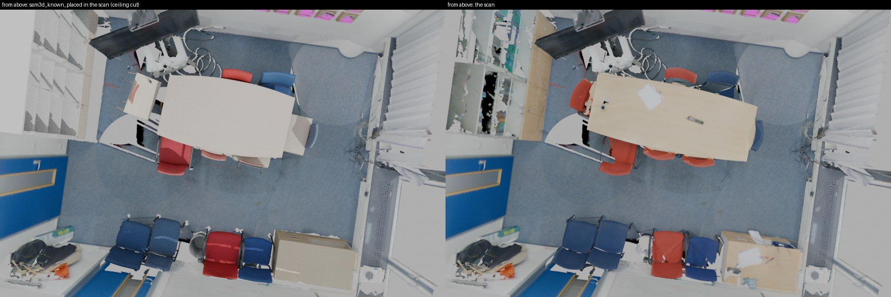
07ff1c45bb · SAM 3D, known cameras, after placement (the best configuration) · from above (ceiling cut away) · 15 placed meshes
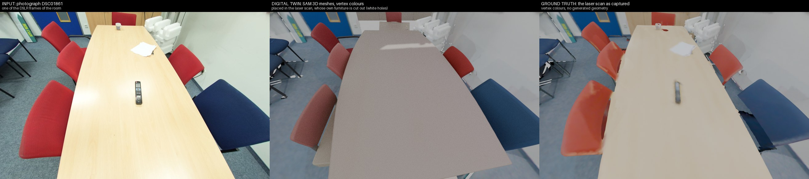
07ff1c45bb · SAM 3D, known cameras, after placement (the best configuration) · viewpoint DSC01861 · 15 placed meshes
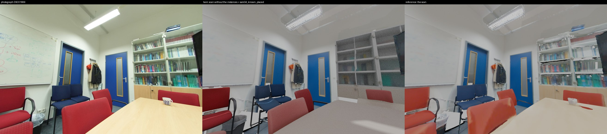
07ff1c45bb · SAM 3D, known cameras, after placement (the best configuration) · viewpoint DSC01869 · 15 placed meshes
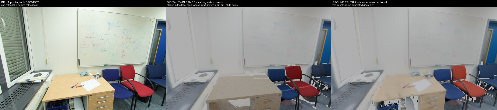
07ff1c45bb · SAM 3D, known cameras, after placement (the best configuration) · viewpoint DSC01607 · 15 placed meshes
4 pictures
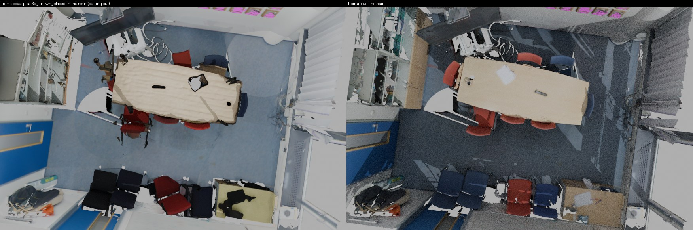
07ff1c45bb · Pixal3D, known cameras, after placement (intermediate: GATOR's route with the open generator) · from above (ceiling cut away) · 15 placed meshes
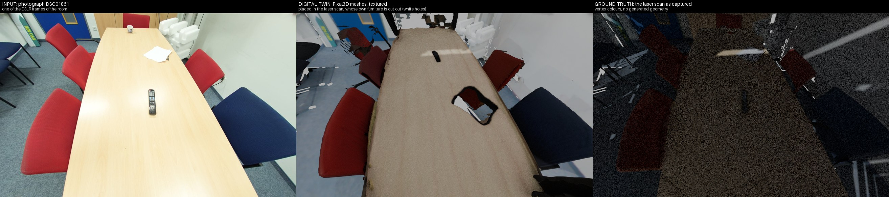
07ff1c45bb · Pixal3D, known cameras, after placement (intermediate: GATOR's route with the open generator) · viewpoint DSC01861 · 15 placed meshes
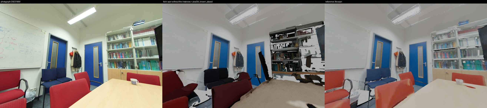
07ff1c45bb · Pixal3D, known cameras, after placement (intermediate: GATOR's route with the open generator) · viewpoint DSC01869 · 15 placed meshes
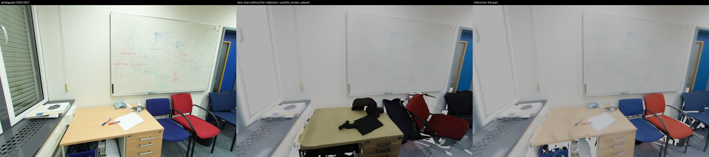
07ff1c45bb · Pixal3D, known cameras, after placement (intermediate: GATOR's route with the open generator) · viewpoint DSC01607 · 15 placed meshes
4 pictures
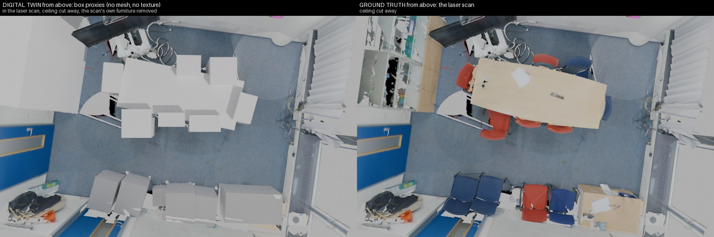
07ff1c45bb · Mundo-style box proxy from the VGGT points, no generator (physics stand-in, not a twin) · from above (ceiling cut away) · 15 placed meshes
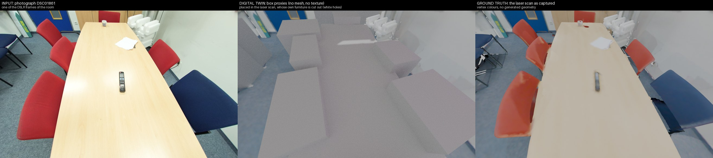
07ff1c45bb · Mundo-style box proxy from the VGGT points, no generator (physics stand-in, not a twin) · viewpoint DSC01861 · 15 placed meshes
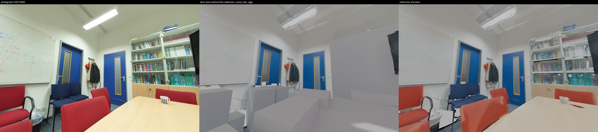
07ff1c45bb · Mundo-style box proxy from the VGGT points, no generator (physics stand-in, not a twin) · viewpoint DSC01869 · 15 placed meshes
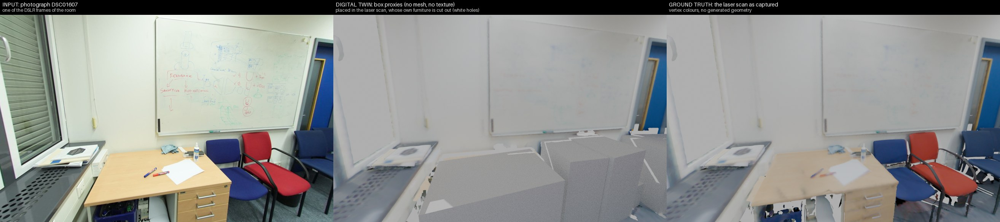
07ff1c45bb · Mundo-style box proxy from the VGGT points, no generator (physics stand-in, not a twin) · viewpoint DSC01607 · 15 placed meshes
4 pictures
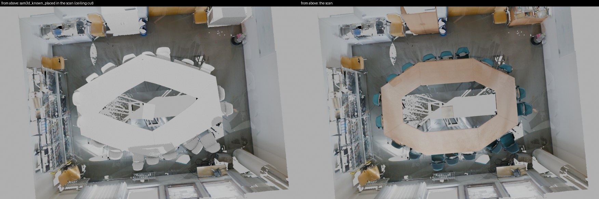
1b75758486 · SAM 3D, known cameras, after placement (the best configuration) · from above (ceiling cut away) · 22 placed meshes
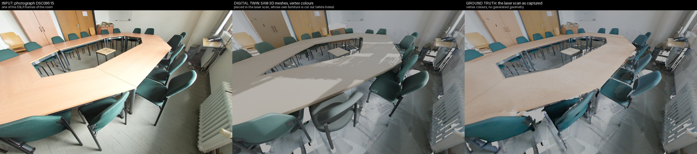
1b75758486 · SAM 3D, known cameras, after placement (the best configuration) · viewpoint DSC09515 · 22 placed meshes
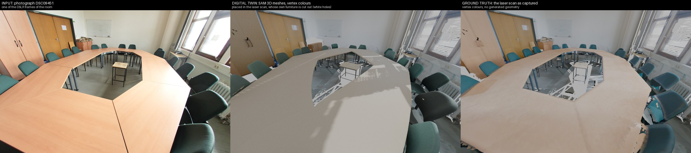
1b75758486 · SAM 3D, known cameras, after placement (the best configuration) · viewpoint DSC09451 · 22 placed meshes
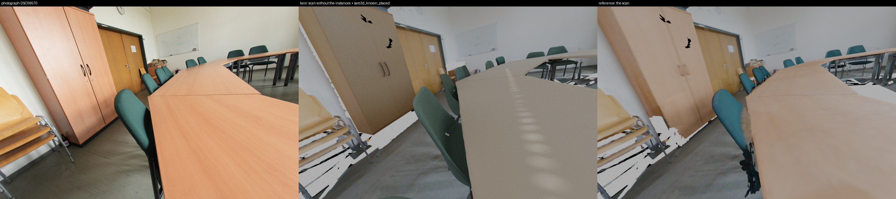
1b75758486 · SAM 3D, known cameras, after placement (the best configuration) · viewpoint DSC09570 · 22 placed meshes
4 pictures
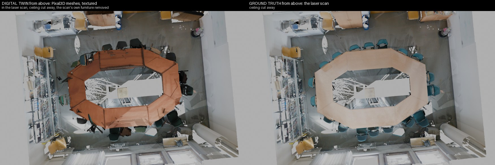
1b75758486 · Pixal3D, known cameras, after placement (intermediate: GATOR's route with the open generator) · from above (ceiling cut away) · 22 placed meshes
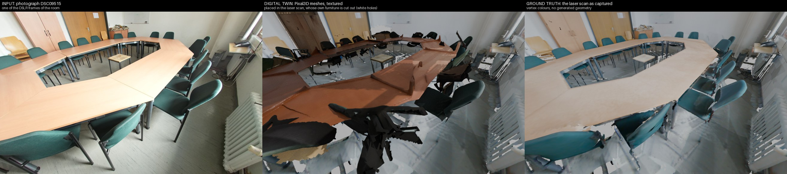
1b75758486 · Pixal3D, known cameras, after placement (intermediate: GATOR's route with the open generator) · viewpoint DSC09515 · 22 placed meshes
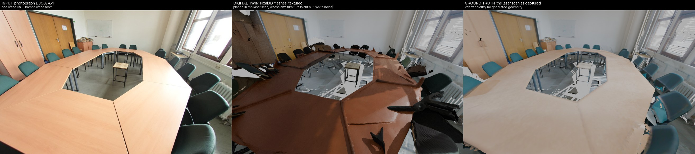
1b75758486 · Pixal3D, known cameras, after placement (intermediate: GATOR's route with the open generator) · viewpoint DSC09451 · 22 placed meshes
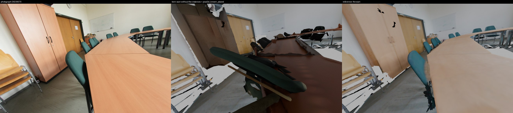
1b75758486 · Pixal3D, known cameras, after placement (intermediate: GATOR's route with the open generator) · viewpoint DSC09570 · 22 placed meshes
4 pictures
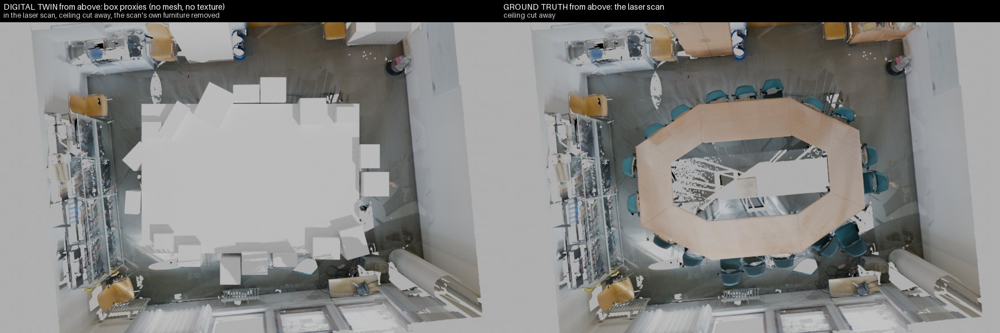
1b75758486 · Mundo-style box proxy from the VGGT points, no generator (physics stand-in, not a twin) · from above (ceiling cut away) · 22 placed meshes
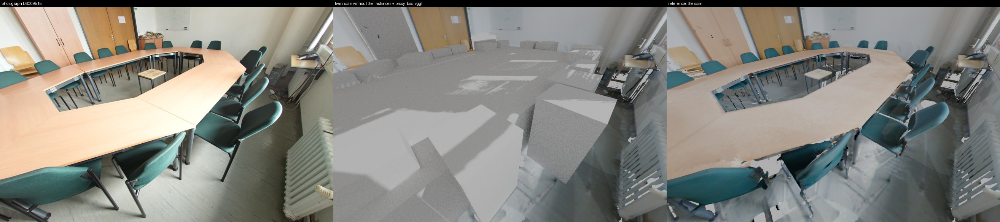
1b75758486 · Mundo-style box proxy from the VGGT points, no generator (physics stand-in, not a twin) · viewpoint DSC09515 · 22 placed meshes
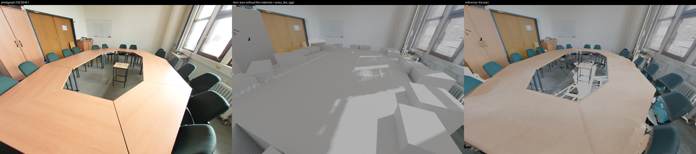
1b75758486 · Mundo-style box proxy from the VGGT points, no generator (physics stand-in, not a twin) · viewpoint DSC09451 · 22 placed meshes
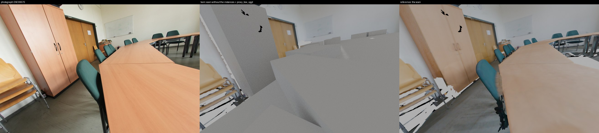
1b75758486 · Mundo-style box proxy from the VGGT points, no generator (physics stand-in, not a twin) · viewpoint DSC09570 · 22 placed meshes
4 pictures
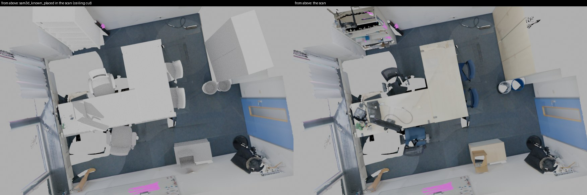
acd69a1746 · SAM 3D, known cameras, after placement (the best configuration) · from above (ceiling cut away) · 14 placed meshes
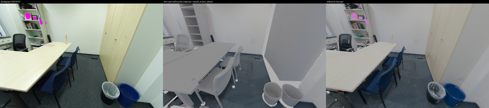
acd69a1746 · SAM 3D, known cameras, after placement (the best configuration) · viewpoint DSC04767 · 14 placed meshes
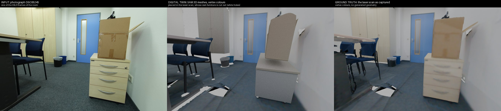
acd69a1746 · SAM 3D, known cameras, after placement (the best configuration) · viewpoint DSC05245 · 14 placed meshes
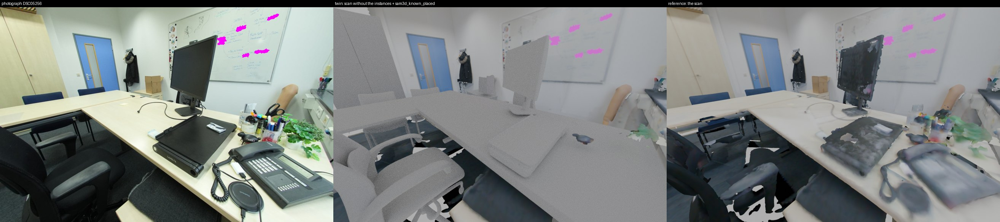
acd69a1746 · SAM 3D, known cameras, after placement (the best configuration) · viewpoint DSC05256 · 14 placed meshes
4 pictures
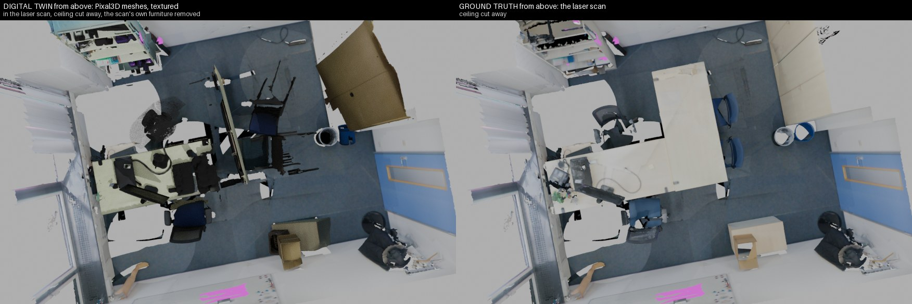
acd69a1746 · Pixal3D, known cameras, after placement (intermediate: GATOR's route with the open generator) · from above (ceiling cut away) · 14 placed meshes
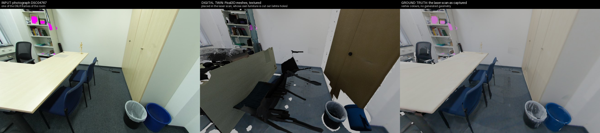
acd69a1746 · Pixal3D, known cameras, after placement (intermediate: GATOR's route with the open generator) · viewpoint DSC04767 · 14 placed meshes
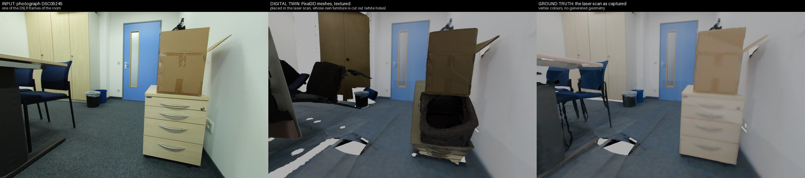
acd69a1746 · Pixal3D, known cameras, after placement (intermediate: GATOR's route with the open generator) · viewpoint DSC05245 · 14 placed meshes
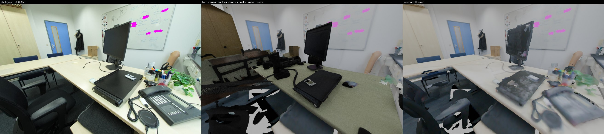
acd69a1746 · Pixal3D, known cameras, after placement (intermediate: GATOR's route with the open generator) · viewpoint DSC05256 · 14 placed meshes
4 pictures
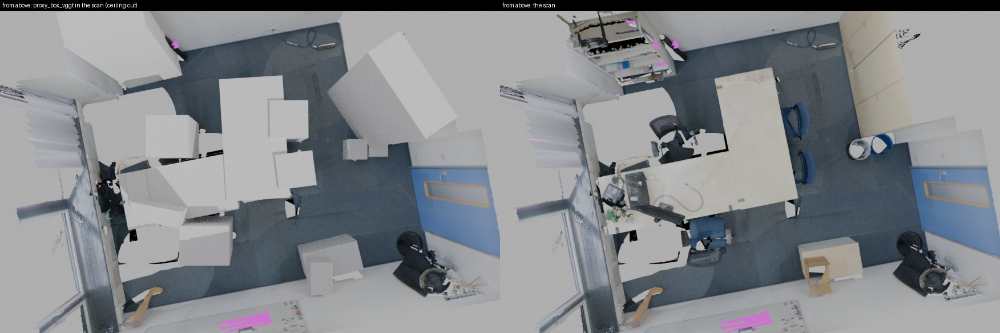
acd69a1746 · Mundo-style box proxy from the VGGT points, no generator (physics stand-in, not a twin) · from above (ceiling cut away) · 14 placed meshes
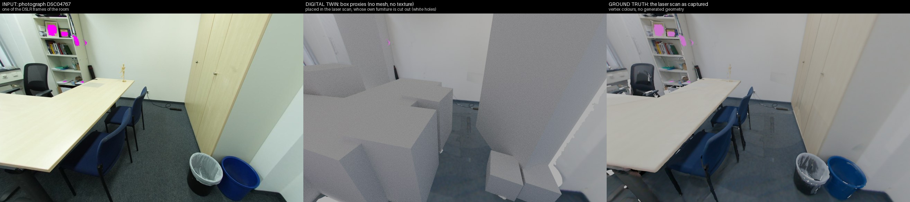
acd69a1746 · Mundo-style box proxy from the VGGT points, no generator (physics stand-in, not a twin) · viewpoint DSC04767 · 14 placed meshes
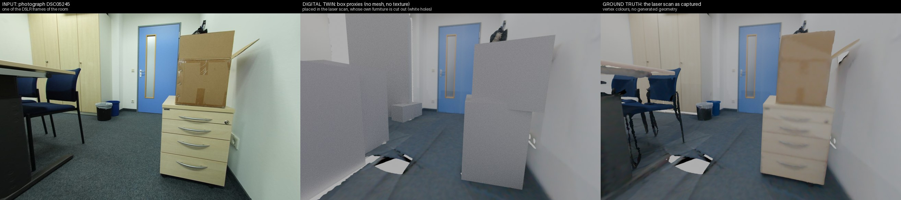
acd69a1746 · Mundo-style box proxy from the VGGT points, no generator (physics stand-in, not a twin) · viewpoint DSC05245 · 14 placed meshes
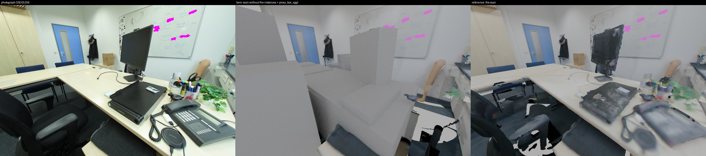
acd69a1746 · Mundo-style box proxy from the VGGT points, no generator (physics stand-in, not a twin) · viewpoint DSC05256 · 14 placed meshes
Per object and two views: the photograph the generator saw (object-centred virtual view), the generated mesh placed in the scene (known and estimated cameras), the repaired mesh where the agent ran, and the scan instance as reference.
15 objects
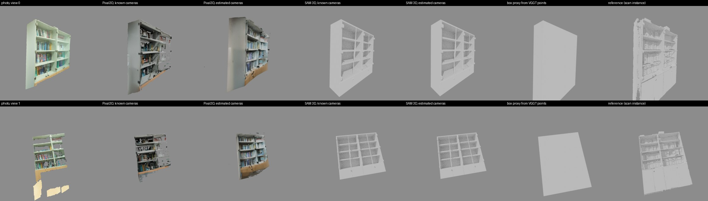
07ff1c45bb · cabinet_1 · bookshelf · panels: DIGITAL TWIN: Pixal3D mesh, textured, DIGITAL TWIN: Pixal3D mesh, textured, DIGITAL TWIN: SAM 3D mesh, vertex colours, DIGITAL TWIN: SAM 3D mesh, vertex colours, PHYSICS PROXY: box from VGGT points, GROUND TRUTH: laser-scan instance
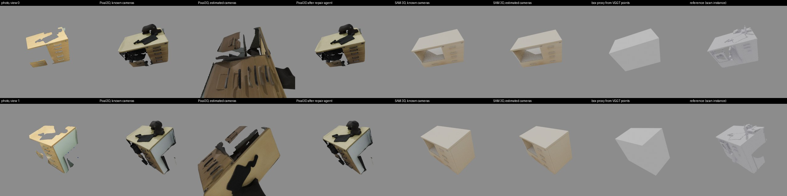
07ff1c45bb · cabinet_2 · cabinet · panels: DIGITAL TWIN: Pixal3D mesh, textured, DIGITAL TWIN: Pixal3D mesh, textured, DIGITAL TWIN: Pixal3D mesh after the, DIGITAL TWIN: SAM 3D mesh, vertex colours, DIGITAL TWIN: SAM 3D mesh, vertex colours, PHYSICS PROXY: box from VGGT points, GROUND TRUTH: laser-scan instance
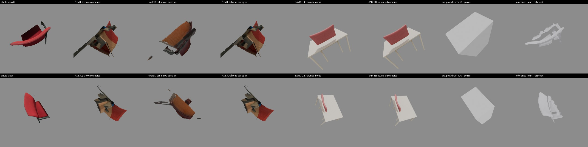
07ff1c45bb · chair_1 · chair · panels: DIGITAL TWIN: Pixal3D mesh, textured, DIGITAL TWIN: Pixal3D mesh, textured, DIGITAL TWIN: Pixal3D mesh after the, DIGITAL TWIN: SAM 3D mesh, vertex colours, DIGITAL TWIN: SAM 3D mesh, vertex colours, PHYSICS PROXY: box from VGGT points, GROUND TRUTH: laser-scan instance
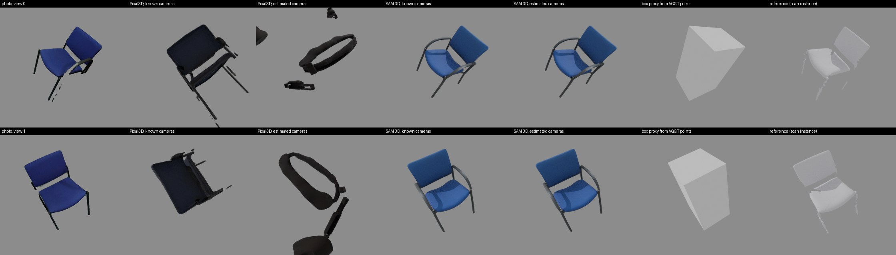
07ff1c45bb · chair_10 · chair · panels: DIGITAL TWIN: Pixal3D mesh, textured, DIGITAL TWIN: Pixal3D mesh, textured, DIGITAL TWIN: SAM 3D mesh, vertex colours, DIGITAL TWIN: SAM 3D mesh, vertex colours, PHYSICS PROXY: box from VGGT points, GROUND TRUTH: laser-scan instance
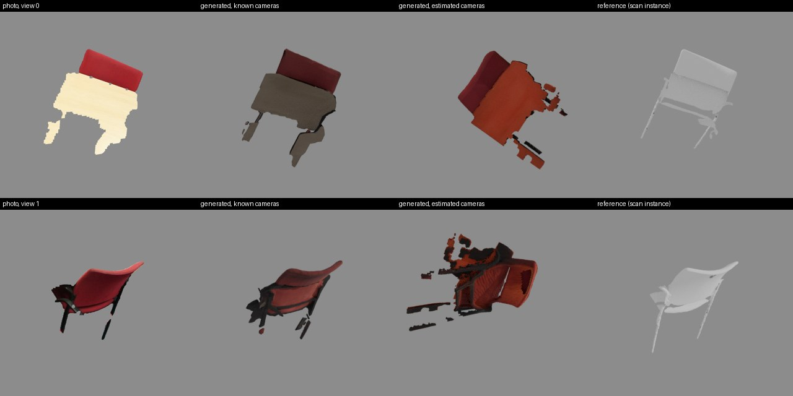
07ff1c45bb · chair_11 · chair · panels: DIGITAL TWIN: Pixal3D mesh, textured, DIGITAL TWIN: Pixal3D mesh, textured, DIGITAL TWIN: SAM 3D mesh, vertex colours, DIGITAL TWIN: SAM 3D mesh, vertex colours, PHYSICS PROXY: box from VGGT points, GROUND TRUTH: laser-scan instance
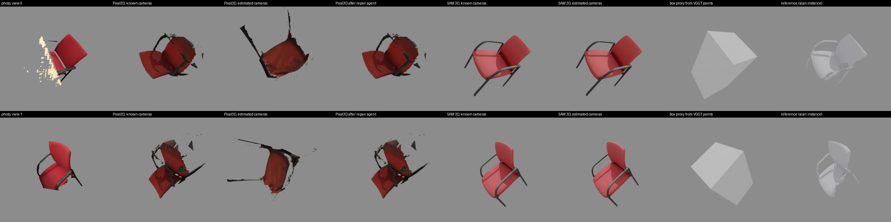
07ff1c45bb · chair_2 · chair · panels: DIGITAL TWIN: Pixal3D mesh, textured, DIGITAL TWIN: Pixal3D mesh, textured, DIGITAL TWIN: Pixal3D mesh after the, DIGITAL TWIN: SAM 3D mesh, vertex colours, DIGITAL TWIN: SAM 3D mesh, vertex colours, PHYSICS PROXY: box from VGGT points, GROUND TRUTH: laser-scan instance
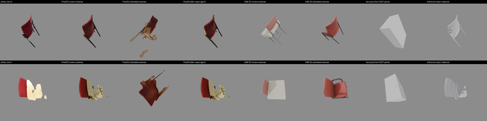
07ff1c45bb · chair_3 · chair · panels: DIGITAL TWIN: Pixal3D mesh, textured, DIGITAL TWIN: Pixal3D mesh, textured, DIGITAL TWIN: Pixal3D mesh after the, DIGITAL TWIN: SAM 3D mesh, vertex colours, DIGITAL TWIN: SAM 3D mesh, vertex colours, PHYSICS PROXY: box from VGGT points, GROUND TRUTH: laser-scan instance
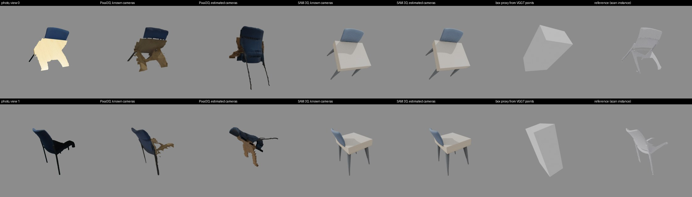
07ff1c45bb · chair_4 · chair · panels: DIGITAL TWIN: Pixal3D mesh, textured, DIGITAL TWIN: Pixal3D mesh, textured, DIGITAL TWIN: SAM 3D mesh, vertex colours, DIGITAL TWIN: SAM 3D mesh, vertex colours, PHYSICS PROXY: box from VGGT points, GROUND TRUTH: laser-scan instance
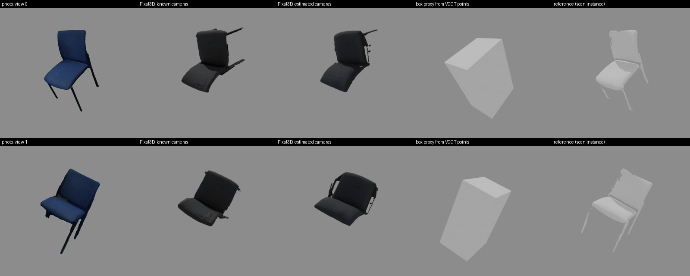
07ff1c45bb · chair_5 · chair · panels: DIGITAL TWIN: Pixal3D mesh, textured, DIGITAL TWIN: Pixal3D mesh, textured, DIGITAL TWIN: SAM 3D mesh, vertex colours, DIGITAL TWIN: SAM 3D mesh, vertex colours, PHYSICS PROXY: box from VGGT points, GROUND TRUTH: laser-scan instance
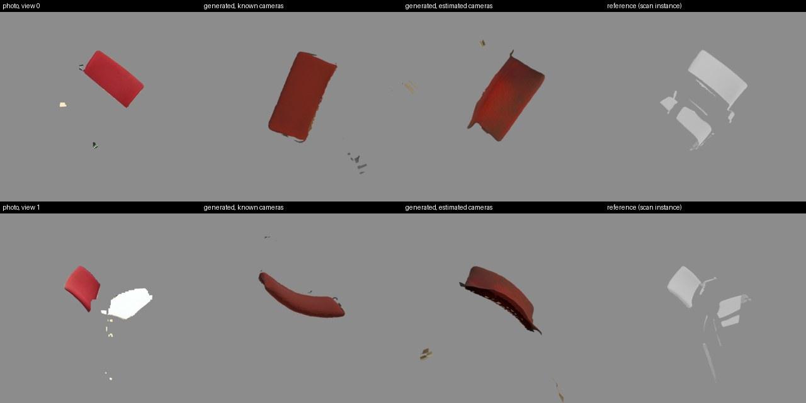
07ff1c45bb · chair_6 · chair · panels: DIGITAL TWIN: Pixal3D mesh, textured, DIGITAL TWIN: Pixal3D mesh, textured, DIGITAL TWIN: SAM 3D mesh, vertex colours, DIGITAL TWIN: SAM 3D mesh, vertex colours, PHYSICS PROXY: box from VGGT points, GROUND TRUTH: laser-scan instance
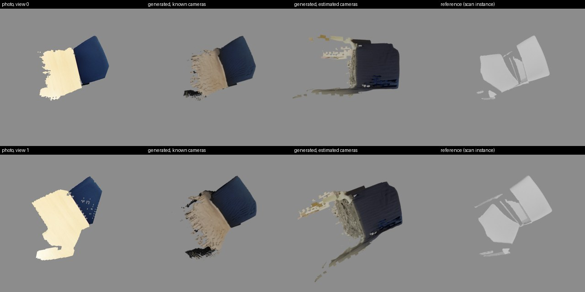
07ff1c45bb · chair_7 · chair · panels: DIGITAL TWIN: Pixal3D mesh, textured, DIGITAL TWIN: Pixal3D mesh, textured, DIGITAL TWIN: SAM 3D mesh, vertex colours, DIGITAL TWIN: SAM 3D mesh, vertex colours, PHYSICS PROXY: box from VGGT points, GROUND TRUTH: laser-scan instance
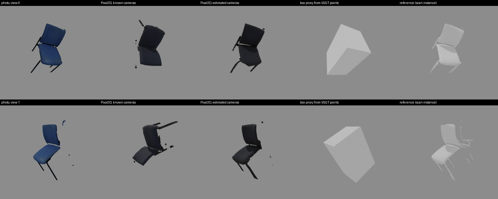
07ff1c45bb · chair_8 · chair · panels: DIGITAL TWIN: Pixal3D mesh, textured, DIGITAL TWIN: Pixal3D mesh, textured, DIGITAL TWIN: SAM 3D mesh, vertex colours, DIGITAL TWIN: SAM 3D mesh, vertex colours, PHYSICS PROXY: box from VGGT points, GROUND TRUTH: laser-scan instance
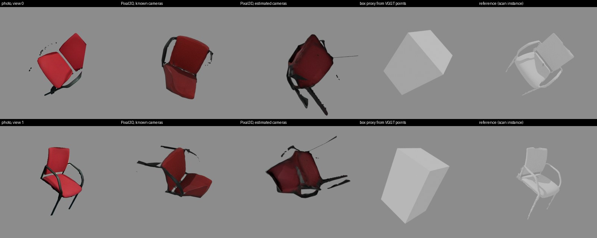
07ff1c45bb · chair_9 · chair · panels: DIGITAL TWIN: Pixal3D mesh, textured, DIGITAL TWIN: Pixal3D mesh, textured, DIGITAL TWIN: SAM 3D mesh, vertex colours, DIGITAL TWIN: SAM 3D mesh, vertex colours, PHYSICS PROXY: box from VGGT points, GROUND TRUTH: laser-scan instance
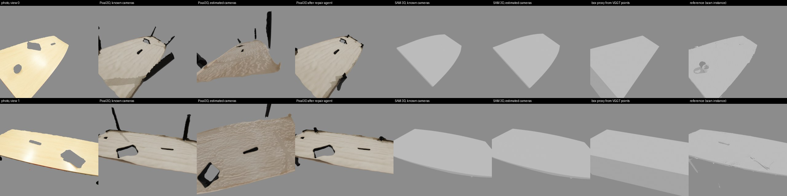
07ff1c45bb · table_1 · table · panels: DIGITAL TWIN: Pixal3D mesh, textured, DIGITAL TWIN: Pixal3D mesh, textured, DIGITAL TWIN: Pixal3D mesh after the, DIGITAL TWIN: SAM 3D mesh, vertex colours, DIGITAL TWIN: SAM 3D mesh, vertex colours, PHYSICS PROXY: box from VGGT points, GROUND TRUTH: laser-scan instance
07ff1c45bb · trash bin_1 · trash bin · panels: DIGITAL TWIN: Pixal3D mesh, textured, DIGITAL TWIN: Pixal3D mesh, textured, DIGITAL TWIN: SAM 3D mesh, vertex colours, DIGITAL TWIN: SAM 3D mesh, vertex colours, PHYSICS PROXY: box from VGGT points, GROUND TRUTH: laser-scan instance
22 objects
1b75758486 · cabinet_1 · cabinet · panels: DIGITAL TWIN: Pixal3D mesh, textured, DIGITAL TWIN: Pixal3D mesh, textured, DIGITAL TWIN: SAM 3D mesh, vertex colours, DIGITAL TWIN: SAM 3D mesh, vertex colours, PHYSICS PROXY: box from VGGT points, GROUND TRUTH: laser-scan instance
1b75758486 · chair_1 · chair · panels: DIGITAL TWIN: Pixal3D mesh, textured, DIGITAL TWIN: Pixal3D mesh, textured, DIGITAL TWIN: Pixal3D mesh after the, DIGITAL TWIN: SAM 3D mesh, vertex colours, DIGITAL TWIN: SAM 3D mesh, vertex colours, PHYSICS PROXY: box from VGGT points, GROUND TRUTH: laser-scan instance
1b75758486 · chair_10 · chair · panels: DIGITAL TWIN: Pixal3D mesh, textured, DIGITAL TWIN: Pixal3D mesh, textured, DIGITAL TWIN: SAM 3D mesh, vertex colours, DIGITAL TWIN: SAM 3D mesh, vertex colours, PHYSICS PROXY: box from VGGT points, GROUND TRUTH: laser-scan instance
1b75758486 · chair_11 · chair · panels: DIGITAL TWIN: Pixal3D mesh, textured, DIGITAL TWIN: Pixal3D mesh, textured, DIGITAL TWIN: SAM 3D mesh, vertex colours, DIGITAL TWIN: SAM 3D mesh, vertex colours, PHYSICS PROXY: box from VGGT points, GROUND TRUTH: laser-scan instance
1b75758486 · chair_12 · chair · panels: DIGITAL TWIN: Pixal3D mesh, textured, DIGITAL TWIN: Pixal3D mesh, textured, DIGITAL TWIN: SAM 3D mesh, vertex colours, DIGITAL TWIN: SAM 3D mesh, vertex colours, PHYSICS PROXY: box from VGGT points, GROUND TRUTH: laser-scan instance
1b75758486 · chair_13 · chair · panels: DIGITAL TWIN: Pixal3D mesh, textured, DIGITAL TWIN: Pixal3D mesh, textured, DIGITAL TWIN: SAM 3D mesh, vertex colours, DIGITAL TWIN: SAM 3D mesh, vertex colours, PHYSICS PROXY: box from VGGT points, GROUND TRUTH: laser-scan instance
1b75758486 · chair_14 · chair · panels: DIGITAL TWIN: Pixal3D mesh, textured, DIGITAL TWIN: Pixal3D mesh, textured, DIGITAL TWIN: SAM 3D mesh, vertex colours, DIGITAL TWIN: SAM 3D mesh, vertex colours, PHYSICS PROXY: box from VGGT points, GROUND TRUTH: laser-scan instance
1b75758486 · chair_15 · chair · panels: DIGITAL TWIN: Pixal3D mesh, textured, DIGITAL TWIN: Pixal3D mesh, textured, DIGITAL TWIN: SAM 3D mesh, vertex colours, DIGITAL TWIN: SAM 3D mesh, vertex colours, PHYSICS PROXY: box from VGGT points, GROUND TRUTH: laser-scan instance
1b75758486 · chair_16 · chair · panels: DIGITAL TWIN: Pixal3D mesh, textured, DIGITAL TWIN: Pixal3D mesh, textured, DIGITAL TWIN: SAM 3D mesh, vertex colours, DIGITAL TWIN: SAM 3D mesh, vertex colours, PHYSICS PROXY: box from VGGT points, GROUND TRUTH: laser-scan instance
1b75758486 · chair_17 · chair · panels: DIGITAL TWIN: Pixal3D mesh, textured, DIGITAL TWIN: Pixal3D mesh, textured, DIGITAL TWIN: SAM 3D mesh, vertex colours, DIGITAL TWIN: SAM 3D mesh, vertex colours, PHYSICS PROXY: box from VGGT points, GROUND TRUTH: laser-scan instance
1b75758486 · chair_18 · chair · panels: DIGITAL TWIN: Pixal3D mesh, textured, DIGITAL TWIN: Pixal3D mesh, textured, DIGITAL TWIN: SAM 3D mesh, vertex colours, DIGITAL TWIN: SAM 3D mesh, vertex colours, PHYSICS PROXY: box from VGGT points, GROUND TRUTH: laser-scan instance
1b75758486 · chair_2 · chair · panels: DIGITAL TWIN: Pixal3D mesh, textured, DIGITAL TWIN: Pixal3D mesh, textured, DIGITAL TWIN: Pixal3D mesh after the, DIGITAL TWIN: SAM 3D mesh, vertex colours, DIGITAL TWIN: SAM 3D mesh, vertex colours, PHYSICS PROXY: box from VGGT points, GROUND TRUTH: laser-scan instance
1b75758486 · chair_3 · chair · panels: DIGITAL TWIN: Pixal3D mesh, textured, DIGITAL TWIN: Pixal3D mesh, textured, DIGITAL TWIN: Pixal3D mesh after the, DIGITAL TWIN: SAM 3D mesh, vertex colours, DIGITAL TWIN: SAM 3D mesh, vertex colours, PHYSICS PROXY: box from VGGT points, GROUND TRUTH: laser-scan instance
1b75758486 · chair_4 · chair · panels: DIGITAL TWIN: Pixal3D mesh, textured, DIGITAL TWIN: Pixal3D mesh, textured, DIGITAL TWIN: SAM 3D mesh, vertex colours, DIGITAL TWIN: SAM 3D mesh, vertex colours, PHYSICS PROXY: box from VGGT points, GROUND TRUTH: laser-scan instance
1b75758486 · chair_5 · chair · panels: DIGITAL TWIN: Pixal3D mesh, textured, DIGITAL TWIN: Pixal3D mesh, textured, DIGITAL TWIN: SAM 3D mesh, vertex colours, DIGITAL TWIN: SAM 3D mesh, vertex colours, PHYSICS PROXY: box from VGGT points, GROUND TRUTH: laser-scan instance
1b75758486 · chair_6 · chair · panels: DIGITAL TWIN: Pixal3D mesh, textured, DIGITAL TWIN: Pixal3D mesh, textured, DIGITAL TWIN: SAM 3D mesh, vertex colours, DIGITAL TWIN: SAM 3D mesh, vertex colours, PHYSICS PROXY: box from VGGT points, GROUND TRUTH: laser-scan instance
1b75758486 · chair_7 · chair · panels: DIGITAL TWIN: Pixal3D mesh, textured, DIGITAL TWIN: Pixal3D mesh, textured, DIGITAL TWIN: SAM 3D mesh, vertex colours, DIGITAL TWIN: SAM 3D mesh, vertex colours, PHYSICS PROXY: box from VGGT points, GROUND TRUTH: laser-scan instance
1b75758486 · chair_8 · chair · panels: DIGITAL TWIN: Pixal3D mesh, textured, DIGITAL TWIN: Pixal3D mesh, textured, DIGITAL TWIN: SAM 3D mesh, vertex colours, DIGITAL TWIN: SAM 3D mesh, vertex colours, PHYSICS PROXY: box from VGGT points, GROUND TRUTH: laser-scan instance
1b75758486 · chair_9 · chair · panels: DIGITAL TWIN: Pixal3D mesh, textured, DIGITAL TWIN: Pixal3D mesh, textured, DIGITAL TWIN: SAM 3D mesh, vertex colours, DIGITAL TWIN: SAM 3D mesh, vertex colours, PHYSICS PROXY: box from VGGT points, GROUND TRUTH: laser-scan instance
1b75758486 · large conference table_1 · table · panels: DIGITAL TWIN: Pixal3D mesh, textured, DIGITAL TWIN: Pixal3D mesh, textured, DIGITAL TWIN: Pixal3D mesh after the, DIGITAL TWIN: SAM 3D mesh, vertex colours, DIGITAL TWIN: SAM 3D mesh, vertex colours, PHYSICS PROXY: box from VGGT points, GROUND TRUTH: laser-scan instance
1b75758486 · small coffee table_1 · table · panels: DIGITAL TWIN: Pixal3D mesh, textured, DIGITAL TWIN: Pixal3D mesh, textured, DIGITAL TWIN: SAM 3D mesh, vertex colours, DIGITAL TWIN: SAM 3D mesh, vertex colours, PHYSICS PROXY: box from VGGT points, GROUND TRUTH: laser-scan instance
1b75758486 · storage cabinet_1 · storage cabinet · panels: DIGITAL TWIN: Pixal3D mesh, textured, DIGITAL TWIN: Pixal3D mesh, textured, DIGITAL TWIN: SAM 3D mesh, vertex colours, DIGITAL TWIN: SAM 3D mesh, vertex colours, PHYSICS PROXY: box from VGGT points, GROUND TRUTH: laser-scan instance
14 objects
acd69a1746 · bookshelf_1 · bookshelf · panels: DIGITAL TWIN: Pixal3D mesh, textured, DIGITAL TWIN: Pixal3D mesh, textured, DIGITAL TWIN: Pixal3D mesh after the, DIGITAL TWIN: SAM 3D mesh, vertex colours, DIGITAL TWIN: SAM 3D mesh, vertex colours, PHYSICS PROXY: box from VGGT points, GROUND TRUTH: laser-scan instance
acd69a1746 · box_1 · box · panels: DIGITAL TWIN: Pixal3D mesh, textured, DIGITAL TWIN: Pixal3D mesh, textured, DIGITAL TWIN: SAM 3D mesh, vertex colours, DIGITAL TWIN: SAM 3D mesh, vertex colours, PHYSICS PROXY: box from VGGT points, GROUND TRUTH: laser-scan instance
acd69a1746 · cabinet_1 · cabinet · panels: DIGITAL TWIN: Pixal3D mesh, textured, DIGITAL TWIN: Pixal3D mesh, textured, DIGITAL TWIN: SAM 3D mesh, vertex colours, DIGITAL TWIN: SAM 3D mesh, vertex colours, PHYSICS PROXY: box from VGGT points, GROUND TRUTH: laser-scan instance
acd69a1746 · chair_1 · chair · panels: DIGITAL TWIN: Pixal3D mesh, textured, DIGITAL TWIN: Pixal3D mesh, textured, DIGITAL TWIN: Pixal3D mesh after the, DIGITAL TWIN: SAM 3D mesh, vertex colours, DIGITAL TWIN: SAM 3D mesh, vertex colours, PHYSICS PROXY: box from VGGT points, GROUND TRUTH: laser-scan instance
acd69a1746 · chair_2 · chair · panels: DIGITAL TWIN: Pixal3D mesh, textured, DIGITAL TWIN: Pixal3D mesh, textured, DIGITAL TWIN: Pixal3D mesh after the, DIGITAL TWIN: SAM 3D mesh, vertex colours, DIGITAL TWIN: SAM 3D mesh, vertex colours, PHYSICS PROXY: box from VGGT points, GROUND TRUTH: laser-scan instance
acd69a1746 · monitor_1 · monitor · panels: DIGITAL TWIN: Pixal3D mesh, textured, DIGITAL TWIN: Pixal3D mesh, textured, DIGITAL TWIN: SAM 3D mesh, vertex colours, DIGITAL TWIN: SAM 3D mesh, vertex colours, PHYSICS PROXY: box from VGGT points, GROUND TRUTH: laser-scan instance
acd69a1746 · notebook_1 · object · panels: DIGITAL TWIN: Pixal3D mesh, textured, DIGITAL TWIN: Pixal3D mesh, textured, DIGITAL TWIN: SAM 3D mesh, vertex colours, DIGITAL TWIN: SAM 3D mesh, vertex colours, PHYSICS PROXY: box from VGGT points, GROUND TRUTH: laser-scan instance
acd69a1746 · office chair_1 · office chair · panels: DIGITAL TWIN: Pixal3D mesh, textured, DIGITAL TWIN: Pixal3D mesh, textured, DIGITAL TWIN: Pixal3D mesh after the, DIGITAL TWIN: SAM 3D mesh, vertex colours, DIGITAL TWIN: SAM 3D mesh, vertex colours, PHYSICS PROXY: box from VGGT points, GROUND TRUTH: laser-scan instance
acd69a1746 · office chair_2 · office chair · panels: DIGITAL TWIN: Pixal3D mesh, textured, DIGITAL TWIN: Pixal3D mesh, textured, DIGITAL TWIN: SAM 3D mesh, vertex colours, DIGITAL TWIN: SAM 3D mesh, vertex colours, PHYSICS PROXY: box from VGGT points, GROUND TRUTH: laser-scan instance
acd69a1746 · storage cabinet_1 · storage cabinet · panels: DIGITAL TWIN: Pixal3D mesh, textured, DIGITAL TWIN: Pixal3D mesh, textured, DIGITAL TWIN: SAM 3D mesh, vertex colours, DIGITAL TWIN: SAM 3D mesh, vertex colours, PHYSICS PROXY: box from VGGT points, GROUND TRUTH: laser-scan instance
acd69a1746 · table_1 · table · panels: DIGITAL TWIN: Pixal3D mesh, textured, DIGITAL TWIN: Pixal3D mesh, textured, DIGITAL TWIN: Pixal3D mesh after the, DIGITAL TWIN: SAM 3D mesh, vertex colours, DIGITAL TWIN: SAM 3D mesh, vertex colours, PHYSICS PROXY: box from VGGT points, GROUND TRUTH: laser-scan instance
acd69a1746 · table_2 · table · panels: DIGITAL TWIN: Pixal3D mesh, textured, DIGITAL TWIN: Pixal3D mesh, textured, DIGITAL TWIN: SAM 3D mesh, vertex colours, DIGITAL TWIN: SAM 3D mesh, vertex colours, PHYSICS PROXY: box from VGGT points, GROUND TRUTH: laser-scan instance
acd69a1746 · trash bin_1 · trash can · panels: DIGITAL TWIN: Pixal3D mesh, textured, DIGITAL TWIN: Pixal3D mesh, textured, DIGITAL TWIN: SAM 3D mesh, vertex colours, DIGITAL TWIN: SAM 3D mesh, vertex colours, PHYSICS PROXY: box from VGGT points, GROUND TRUTH: laser-scan instance
acd69a1746 · trash bin_2 · trash can · panels: DIGITAL TWIN: Pixal3D mesh, textured, DIGITAL TWIN: Pixal3D mesh, textured, DIGITAL TWIN: SAM 3D mesh, vertex colours, DIGITAL TWIN: SAM 3D mesh, vertex colours, PHYSICS PROXY: box from VGGT points, GROUND TRUTH: laser-scan instance
Per object and two views: photograph, generated mesh (known and estimated cameras), and the artist model as reference.
5 objects
000003 · obj_11 · handal object 11 · panels: generated, known cameras, generated, estimated cameras, reference (scan instance)
000003 · obj_16 · handal object 16 · panels: generated, known cameras, generated, estimated cameras, reference (scan instance)
000003 · obj_33 · handal object 33 · panels: generated, known cameras, generated, estimated cameras, reference (scan instance)
000003 · obj_36 · handal object 36 · panels: generated, known cameras, generated, estimated cameras, reference (scan instance)
000003 · obj_37 · handal object 37 · panels: generated, known cameras, generated, estimated cameras, reference (scan instance)
5 objects
000005 · obj_02 · handal object 2 · panels: generated, known cameras, generated, estimated cameras, reference (scan instance)
000005 · obj_17 · handal object 17 · panels: generated, known cameras, generated, estimated cameras, reference (scan instance)
000005 · obj_29 · handal object 29 · panels: generated, known cameras, generated, estimated cameras, reference (scan instance)
000005 · obj_33 · handal object 33 · panels: generated, known cameras, generated, estimated cameras, reference (scan instance)
000005 · obj_37 · handal object 37 · panels: generated, known cameras, generated, estimated cameras, reference (scan instance)
5 objects
000009 · obj_09 · handal object 9 · panels: generated, estimated cameras, reference (scan instance)
000009 · obj_10 · handal object 10 · panels: generated, known cameras, generated, estimated cameras, reference (scan instance)
000009 · obj_12 · handal object 12 · panels: generated, known cameras, generated, estimated cameras, reference (scan instance)
000009 · obj_16 · handal object 16 · panels: generated, known cameras, generated, estimated cameras, reference (scan instance)
000009 · obj_28 · handal object 28 · panels: generated, known cameras, generated, estimated cameras, reference (scan instance)
6 objects
000010 · obj_02 · handal object 2 · panels: generated, known cameras, generated, estimated cameras, reference (scan instance)
000010 · obj_08 · handal object 8 · panels: generated, known cameras, generated, estimated cameras, reference (scan instance)
000010 · obj_20 · handal object 20 · panels: generated, known cameras, generated, estimated cameras, reference (scan instance)
000010 · obj_33 · handal object 33 · panels: generated, known cameras, generated, estimated cameras, reference (scan instance)
000010 · obj_34 · handal object 34 · panels: generated, known cameras, generated, estimated cameras, reference (scan instance)
000010 · obj_37 · handal object 37 · panels: generated, known cameras, generated, estimated cameras, reference (scan instance)